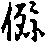

卍新纂大日本續藏經 第50冊
No.819 成唯識論疏抄 (16卷)
【唐 靈泰撰】
第 1 卷
No. 819
成唯識論疏抄卷第一
言玉井者。或云已南地有玉井。或云天泰星名玉井。然泰即有十个星。即四角大星。盛六个參星。即四角大者名玉井。又如法花經中。疏中返可為迢。返正為令者。即得傳書中正字以反也。此是傳書中正字也。忍字傳書中令字也。今者即反正字。為忍字也。下第一疏中有者准知。廣明五樂十利法花記。竊以者。然諸文頭首。詳夫。竊以。蓋以。若夫。夫以等。皆是發語之端。端者頭首也。由如下文今造此論。即是發端。標舉簡持指斥發端。即是端序也。然此中即約三教對辨也。六位精微者。然黃帝登山。見一神氣。龜背上有五爻文等。乃至遂造八卦。乾三長川六短等。然此八卦皆有三畵。已後文王翻八卦以為六十四卦。即名八卦。然六十四卦中。即將八卦為頭。以次相望餘七卦。即有八个离八个巛八个即等名以純。若單八卦。一一唯有三畵。若六十四卦。四中即有六畵。故言六位。六位者。如上乾下巛。即有六畵。又如上次下离。餘者准知。皆有六畵。即名六位也。然此六位諸文書中極是精髓微妙。故言精微也。資象翼而筌理。資者取也。如孝經云。資父以事君。資母以事父。父則兼之。若事君即敬之。如事君王。唯須恭敬。君王若嗔即行煞也。故唯敬也。若事母唯須愛之。如母唯怜愛男女。不行煞也。若事父。即須且敬且愛。如事父也。時兼行敬愛。如父且怜愛男女。嗔時且煞男女也。象者即是十翼。中象下象等。然十翼中。以象為首。故今舉象。翼者十翼也。輔翼於六位也。要將十翼。方解釋六位也。言十翼者。一上象。二下象。三上繫。四下繫。五上彖。六下彖。七文言。八說卦。九雜卦。十序卦等。然六位即藉十翼。方始筌得道理也。如易中說。已上明孔子教。次下明老子教。二篇玄妙者。即是老子所造。道德二篇。修行名道。道成曰德。此道德且是幽玄微妙。藉蒙列以探機者。藉者假藉也。蒙者蒙子。列者列子。即是百家諸子。即要藉蒙子列子莊子抱朴子淮南子等百家諸子。釋老子道德二篇。探者以手探取也。機者要也。況乎者。此況次下明佛教。如前二劣教中。若孔子之教。即六位為主。即將十翼以釋六位。若老子教中。即將道德二篇為主。即將百家諸子以釋二篇。今佛教中。即佛教為主。如前六位及二篇。即菩薩造論以釋佛教。如前十翼百家諸子也。非有非空者。即佛教。然大小乘教。皆名非有非空。今者唯取中道大乘之教。非有非空。遍計名非有。依圓名非空。
息筌辯於言蹄之外。息者止息也。取魚名筌。取兔名蹄。辯者。名言能詮之教言也。如藉筌蹄以取魚兔。如因言教方詮得道理。若得魚兔。即弃筌蹄。若得道理。即息言教也。魚兔喻理。筌蹄喻教。不生不滅絕名相於常寂之津者。即謂真如之理體。不生不滅。又離名言及離相狀。體無相故。其體是常無滅故。又寂靜故。津者如言實際。今者真如即諸法之津際之本也。至覺者。即是佛也。逈也者遠也。照者明也。宗者崇也。主者尊也。意說佛能遠照深遠道理。道理可尊重故。將聖者。即是菩薩也。若佛即名至聖。若菩薩即名將聖也。甄者簡也。宰者輔宰。前明佛中言宗。宗即是主。今明菩薩中言宰。宰即是百官。如下亦言我謂為主宰。相對明之。又有本言滓者。然菩薩未斷盡二障故。即有滓穢。然佛斷二障故。即無滓穢也。無言之言乃至月懸者。即是前非有非空之教也。然中道大乘理體離言。故芳無言。要藉經教言。方顯得大乘道理。故說之。言風者。即說經教法如風。如世言聽察懸令長官風教。警者。即是十二部經教法之風。警覺群情。然有本云無言之言風警也。韜者藏演也。邃者遠也。采而月懸者。由如雲披霧卷。即得見於天上月也。今因言教。即得見於所有藏隱遠道理也。非有之有者。即是前真俗二諦。波騰者。即是詮真俗二諦言語是也。湛幽章而海濬者。濬者深也。海喻真如之理。如見水波騰大。即知大海水深也。若水淺波亦小。俗云一尺水不能作一大波。今者由因唯識言教故。即顯真如之理深。若不得言教。則不知真如理也。
匪者非也。屬者屬着也。具體者佛也。然佛具功德之體。隣智者即菩薩也。然即隣近佛智故。今此意說。若非屬着具體隣智之人。方能演說唯識深妙理也。演者說也。[(阜-十+止)*責]者即是妙中之妙。名之為[(阜-十+止)*責]也。釣者。取意說佛教。能演得妙中之妙。釣得深遠道理。則空性之義幾乎息矣。意說。上來所說中道大乘唯識之教。極是幾要。即是息心之處也。
十支者。即五薀論。二十唯識。三十唯識。集論。分別瑜伽論。有三卷。唯明禪定等事。更不明餘義。及莊嚴論等。問十支名字誰人所作在何。問百法論。即名略陳名數支。乃至已後九支。皆唯此問。又問總包眾義支。與總攝大義支。名字何別。思之。然大乘中。即將瑜伽論為身。餘唯識等論。以為支葉。若小乘中。即將發智論迦延經為身。將六足論以為脚足也。
白虹者。即如來入涅槃時。有十二道白虹貫日。即中心圓者是日。四畔者是白虹也。問何故唯有十二道。不言十一道十三道耶。更問飛祲者。即惡氣。謂天苟上掃星白虹等。皆是祲也。其諸灾恠踊在空中名飛也。素者。上句既言白。下句即言素。相對故爾。素者還是白色。索毫者毫光。銷者銷爍也。宵者夜也。霄者雲霄。合是綿下化也。景者明。即如來臨欲涅槃時。但是有緣之處。皆放白毫光以照之。其所照處。不經千年或五百年。必聖教流到也。其如佛欲涅槃時。在夜裏放光。夜中即大明。故言銷景。或銷於日也。線花乃至謬日者。此下四句。即明佛入涅槃已後。所有經教。皆悉殊錯失。線花者。即經能持緯。經能持義。如線貫花。奧者深也。舛鳳訛風者。然作鳳字。即令風脚裏著鳥名為鳳。有人錯失作其風字。即風脚裏著虫錯作風字。意說佛涅槃已所有經教錯失也。貝葉者。其西國經論。皆向唄多葉上寫也。乖魚謬日者。如俗作魚字應合魯頭下著火即是。若魯頭下著日。錯作魯字不盛魯字。意說。佛涅槃已所有教細皆。[(厂@((既-旡)-日+口))*頁]者所以義。惟者思量義。法寶者。即是經教。斯者此也。行者行動瞬息須臾義。墜者墜沒也。此上文疏主意言。我所以繫思量。佛法須臾。行動瞬息中間即墜沒。有人云行字者非也。今是行字。即是行動之間也。若坐臥即得久也。若行動唯得暫時也。
誕者生也。茲者此。融者通識。謂由造得三十頌。即出生得及通融得唯識之教。秀者獨秀也。晦者闇也。孤明者即是大乘。大乘之解名為孤明。小乘之解不名孤明。意說。天親菩薩先方便闇於大乘孤明之解。即向小乘中出家。而造俱舍論。以明經部師宗。示同塵而說有者。天親菩薩也。天親雖向小乘宗中出家。和光而示同塵也。俱舍論中。且明薩婆多師義。故云說有也。解慧縛於攝論者。言慧縛者。即是所知障。所知障是慧縛故。能障菩提。其煩惱障名為性縛。能障涅槃。若小乘執即是慧縛。意說。天親菩薩先示有所知障。有慧縛故晦於大乘。即向小乘宗中出家。今者捨小向大乘。造捨攝論。即無著菩薩見天親病。令弟子取得。天親已無著弟子中一人。頌十地品已。天親既病已。造攝大乘論釋十地經也。即是解慧縛也。表縱者。即天親後大乘。彌弘大乘教。令大乘得終逸盛行也。聖者。五百年一賢。千年一聖也。疏。談空者。上句既言說有。下句即言談空。亦相對也。鑒者。照也明也。意既天親菩薩之智。能照明一切義道。皆悉周盡。洽者潤也。意明天親菩薩所說義。徒普利樂潤益一切有情皆周盡也。故言鑒洽智周也。玄極者。即此三十頌。普釋一切經幽玄極妙之理皆盡也。
釋文未就者。但是化得三十頌。未作得長行釋也。歸真者。意說。天親菩薩入涅槃。名歸真上遷。遷者死也。意說。天親菩薩身死。問不言中下遷。又人問言。伏惟上□不言中下更問。繁者多也。約者少也。意說。天親菩薩造得頌。其文極少。其義極多。泉源者。然此唯識論。即是一切諸法之根源也。重秘者。秘藏也。意說。佛初滅度。得其唯識道理。一迥藏隱。今又天親滅後唯識之理智。第二通迥藏隱也。故云重秘。
爰者於引。即引於護法等也。液情者。如水澄淨故。即見人面。若心澄淨故。故即得見於唯識道理也。七轉者。八轉聲中除却第八汎呼聲。取前七聲也。激者請也。由如將擊鍾。其聲乃發。若有人請菩薩。菩薩方說法也。河辯者。然此菩薩所有辞辨狀若懸河。讚微者。即此十菩薩。造長行釋。讚此唯識三十頌微妙之言。神者心也。八識者。然菩薩聲聞各有四藏。故有八藏。菩薩中一明定之處。即名修多羅藏。二若明戒之處。即名毗尼藏。三若明慧立之處。即名阿毗達摩藏。四若雜明戒定慧處。即名雜藏。然聲聞藏中。亦有四藏。緣覺乘中不立藏者。以無別經教也。淨彼真識者。其唯識道理。先未雖有得名真識。由未成立唯識教故。不名為淨。今者造唯識論教。成立唯識道理。乃名淨彼真識。真識不唯約依他起性。圓成性名為真識。三三性性總名真識。三性總名唯識也。雅者正也。權實者。今明唯識中有二。一者云。不定性二乘為權。頓悟菩薩為實。二云。若他受用及變化身為權。自受用身法性身名之為實。然唯識論中。三身具明也。陵者蔑也。今唯識論更高高妙。即陵蔑鷲峯。鷲峯者即耆闍崛山也。理洞希夷者。視所不及名希。聽所不及名希夷。此文即用老子之語。掩者覆障。龍宮者。意取於海其唯識理深邃。即深於大海。若理高於山也。又解云。龍宮中多有經論。今此唯識論。更勝龍宮中經論。或可鳥獸相對。前句言鷲。鷲即鳥。後句言龍。龍即獸也。綱者紀綱。領者衣領。門即能管衣如要即是衣袖。衣袖中出得手能有要用。意說。唯識論能作諸經之綱領要用也。索者消索也。隱者藏也。諸經論中所有索藏隱之義。皆在此唯識論中極得。掇者拾掇也。奇者奇異也。其唯識論中。即能拾掇得諸經論中所有奇異之義。皆在唯識中提錄得也。三量者誤現量聖言。將此三量。破斥外道道靡旌如兩陳戰時。若軍得勝。即旌幡堅也。其軍退弱者旌幡預。即位摩摩者位。二因者。即是因明論中生因了因也。意說。因明宗因喻三之道理。由立論者言生因。即生歒諸者智了因。由如誦泉相似。即將因明生了二因。以破小乘。小乘退弱而不依徒。轍。牛蹤曰躅。車蹤曰軌。問靡旌亂轍。出何書文。更問儀者擬。儀天地而齊載者。天能覆地載。意說唯識道理。擬儀天地能覆能載也。孕者含也。即如母腹中有子。名為懷孕。與黃河爭流者。其黃河水流極是迅速。我今此唯識論。諸方流行。更速於黃河水流也。而與黃河爭流也。有本云黃河流者。潢者是積水名。在流東污者。漢水名也。此二水並流。故云潢污爭流。污字是綿字上聲呼也。又有本云黃繩。繩者忽。雷霆者霹靂。如忽雷霹靂發音響。唯得近處知聞。我今唯識論名響遠名遐耨振。故名當遷競響而已。昔在周照王佛即生也。在周穆王時入滅。夜中放光隱却星宿之光。當爾之時。佛法仍未至此漢國。閟者藏也。至道者。即是佛法也。鬱者盛貌也。漢日通暉。暉者光也。即如佛放光所照之處。經千年已佛法定至彼處也。即在漢明帝時。摩騰竺法蘭。白馬駄經至於此土。像者。若正法五百年時。佛法未到此間。至像法中方到此土。遐者遠也。被也。及也。
譯經律義者。次下文即明上故。自從佛法東流。翻譯經僧。乃有三百餘人。由如河流之而不沙絕也。繼武者跡也。從西國譯經之僧。而脚蹤跡相續也。故書云堂上布武。堂下接武。武者是跡。如人見君王官人時。若至堂基下行時。脚移一尺地不得作步。不是寬行大步之處。若被喚上堂基下行時。即脚跙唯移一寸二寸地。不得移一尺地也。多覿。覿者見也。蔥右者。若蔥嶺已西。即巳名蔥右蔥嶺已東即名蔥左。英者英彥即是評經之僧。此文意說。上代已來。或有蔥嶺已西鳥長國等僧。或是餘邊國僧等。此等皆是胡僧。不是真婆羅門。亦不是梵語。來向此間譯經。此間人無不夢見五天竺國中諸英且等。亦不聞真梵語。亦不見大羅漢菩薩也。今者大唐三藏法師。一一親至五天竺國。見諸英秀等。親承教授。解真梵語。壤者立田地名也。蔥嶺已西小邊國中。既總是胡。言音不正。不是梵語。則與五天竺國梵語不相似也。混者混雜也。宮羽者。即是五音之宮。宮商角徵羽等。花者大唐國名花夏。戎即西諸邊國。皆名為西戎。不是真婆羅門。亦不是五天真語。故此國南邊諸國。即名南蠻。北邊諸國即名北狄。東邊名東夷。西邊即名西戎。此文意說。將西邊國戎胡語。翻譯作此間花夏之語。混雜令同。亦訛謬。以不是真梵語故。文字天懸者。若中天竺國中書字皆是天書。所有言語皆同天語。而梵王之語故。五天竺國者。此云月支國。如天上月極是清凉。能除熱惱。一切賢聖皆於五印度國出世。能除眾生煩惱。若此漢國中字即是人作。即是古者蒼纈等造諸。語是人語。所以古來將天竺之天語天字。譯同此方人語。或即錯失也。昧者闇也。形聲者。即是亦書形聲字。所謂象形轉注等字。胡者。即是已西邊國胡僧之語。晉者。即是此方漢國。意說古者已來。所有翻譯之僧。皆是已西邊國胡僧。唯解胡語。不解梵語。即將胡語而譯翻經。然晉多錯道義也。糟者酒糟。粕者。糟中元有好味名粕。但得少許糟粕。不得幽玄之處也。爽者失也。
鴻者大也。碩者大也。若大疑即如霧擁。若大滯即如雲凝也。如大霧擁。如大雲凝。則不見天日。若有大疑大滯。則不見甚深道理也。幽者幽隱。絢者。五邊文綵也。屢者數也。此文意說。其義理中所有幽隱文綵。上來數數陳說。詳者說也。所有道理略說可知。
含章。章者文章。萃者聚也。意形三藏法師與餘人聚集之處。其三藏名。即出於餘人外。燭者眼之所見名之為燭。搏者拖取。靈臺者。即是中心。意說。三藏法師心眼能取義理之心髓三年。畜者畜也。德謂道德。宗者尊也。意說。唐三藏身中畜積道德。居其尊位也。漪者水也。沼者池也。意說。三藏身中有智水。涌而無盡。騖者舉也。三輪者。謂神通教誡記心。躅者車蹤曰躅。逈遠也。晉者進也。金沙即是西方阿利羅跋提河。河中有金沙也。此一句意。說。唐三藏。遠進向西方阿利羅跋提河邊去。此中晉字。唯於評中云晉者進也。其准著走繞之進字。與晉地之晉字。此二个字皆同是進去也。八解者。即是八解脫也。意說。三藏身中。有八解脫之中。真波者即是水也。遼者遠也。玉井者。即西方有一國。中有其玉井之事。意說。三藏遠向玉井去也。即玉井與上句金沙相對也。軀者身也。殉者求也。意說。三藏忘却身上疲勞。以西方求法也。委者杖託也。祈者請祈求也。通者通達。意顯三藏杖託三寶。而發祈願。得通達也。
冥契天真者。意說。三藏冥契而通達。得契天心而願滿也。微者少也。資者取也。習者學也。意說。三藏至彼西國。少用功夫。多學得學問經論也。匪者非也。摛者布也。異者別也。此上句即顯三藏智慧寬。非但智慧寬布。神靈之人。方顯與餘人別異。故言顯異也。固者堅固也。薀者聚也。迢者遠也。祥者善也。此一句即嘆三藏有福也。意顯有堅固身中多聚似集福德之人。方身遠逝也。
備者闊也。踐者履也。神者即是佛菩薩諸聖弟子等是也。蹤者跡也。意顯三藏至彼西國中。所有聖人蹤皆悉周遍。兼履踐也。窮探秘府。秘府者。即是佛菩薩聖人等心中之事。意顯三藏往彼西國。能窮盡探取得佛菩薩心府中秘要之事。覿者見也。先賢者。即是此國中上代已來諸法師等。樞者樞機。此已上二句。意顯此方上古大德未見之義。三藏皆貫達。在情府樞機之等。曩者往也。遺者失也。次二句。意顯古來大德所遺失之義。三藏並包心極也。
志者意志也。弘者大也。撫者接也。此文意說。三藏本意誓願意志大撫接眾生。此已上文。即讚三藏在西國時事。言旋舊邦者。此已下文。即顯三藏即從西國還本國也。德謂道德。簡者當也。此文意說。三藏道德契當天子之心。延者遠也。天藻者。意說。三藏先有天生才藻。不猶人孝。寶偈者。即是護法所造得唯識三十頌釋。護法既於菩提樹下欲死之時。造得唯識已來。未出流行。是時菩提樹下。有一五戒賢者。獨自供養護法菩薩。經於三年。時護法即將此唯識釋以報賢者息。是時賢者得此唯識釋已。若餘人遠看此釋者得金錢。若有近看此釋者。即金錢更多。已為敬重此釋故。故下疏文言。制此釋者。雖十論師。於中護法聲德獨振。餘人皆不得此頌也。如樞要中說。後時三藏法師。至彼西國。遂肘行膝步。時賢者見三藏遠來。雖不得金錢。即與三藏唯識釋也。南贊者。三藏既得此唯識釋已。廣向南天竺國天子。讚嘆而廣流行。金牒。問此言帝心者。為是西國天子。為是此國天子。若言此國天子者。三藏既別此國。何故下文言南讚。即說寶偈向南印度境。若言西國天子。其三藏未來此土。何故前文即言言旋舊邦。應問。如愚意者。未來之日。向南印度流行。即談彼此亦無過也。金牒東流者。即將唯識釋。來向東本國也。暢者說也。翳者障弊也。蕩者洗蕩也。疑者氣也。意說。上古已來。所有疑惑氣氣鐃鐃有多也。縟者即五色縟也。思者智慧思。此字應去聲呼之。頴者超拔也。彈者押也。駕者動也。此文意說。三藏道德。能押得餘人頭也。意說。三藏於眾人中最獨拔也。陵者欺陵也。掩者覆障也。意說。三藏身中道德知解。即欺陵掩却舌千古已來也。
詎與夫者。即是語之端序。猶如竊以盖等意勢相似也。家依者。即真諦三藏。梵云真諦。此云家依。驤者上也。譽者名譽也。擅者獨也。美者好也。聲明者即是聲明論也。此文意顯真諦三藏當時雖得勝上好名譽。此人更不普解餘經論。空獨善解聲明論。如聞鳥鳴即解鳥語也。童壽者。即是羅什法師也。梵云羅什。此云童壽。芳者美好也。徒者空也。中觀者即是中觀論百論十二門論等。意說。羅什法師。雖得妨芳名。唯得中觀論百論十二門論等。更不善餘經論也。意及顯我三藏得具解一切經論也。云爾而已矣者。即是結句之辭也。
斯者此也。彚者類也。意說。此唯識論本。類有其十師釋。以糅作為一部也。商量也。攉略也。華者即是此方漢國名。花夏心處。梵者即是西方梵語。詮者詮量也。此文意說。三藏翻譯唯識論時。即商攉量陳漢語梵語。詮量音聲輕重。而翻譯也。陶甄諸義之差別。甄者成也。意說。三藏譯此十師義者。十師義不同者。即於唯識文中。釋一箇義文處。宜多有義有義等。即簡三个五个有義也。即如釋種子中有三師義等是也。有十一師之翻者。叶者和也。意說。三藏譯唯識時。若見釋一義處。十師皆同一解者。譯論之時。即和十師義。同着一个有義處。不着多有義也。宏者大也。綱者綱紀也。
言成唯識者。且舉大綱。旌者。如見旌即知下有天子。如見旌幡即知下有將有軍。如見成唯識言即知下有唯識論也。鏡者鑒照義。簡二藏者。既言論者。即簡却餘經律二藏。獨標論藏。為功德者。即釋成字。成者即成立得功失也。故別行教跡云。成乃能成之稱。建大義之鴻猷。大覺者大乘也。或是佛地。旨意志也。隆者高也。意說。有無外境唯立識者。即是大乘意志高遠也。本頌成者。有三十頌得成立者。即得中道義顯也。着者顯也。
泯相者。泯者攝也。攝即攝相分但言唯識也。執有者喪其真者。即是增益。執真實道理也。滯空者乖其實者。即是損減。執真者實道理也。滯空者乖其實者。即是損減執也。下言實者。與上句真字相對也。晦者闇也。長溺二邊者。即便溺在增益邊損減邊也。藉此成彼名成唯識者。其此三十頌。名為唯識。其長行論。名之為成。即將論而成立三十唯識。故言唯識之成也。三摩娑者。即是六釋中依士釋也。梵云三摩娑。此云依土釋也。然梵云煞三摩婆娑此云六雜合釋。
蘇漫多者。是梵語。即是八轉聲中。第七轉依聲中。屬主釋也。賓者歒論者。主者即是立論者。云烈者。立者歒者。立歒者兩伴作行座也。夫言論者。必有賓主擊物。有立有破。名之為論也。旗皷載揚者。夫論義之法。由如兩陣相戰旗幡打戰皷。即有一退一勝。論義亦爾。即須打鐘集眾。有立有破。有勝有負也。幽關洞開者。因於論議。所有幽隱難解之義。皆得解之。而得洞徹也。[(阜-十+止)*責]者妙中之妙也。以教成教者。即論長行教。而成立三十頌教也。資教成理者。資者取論長行教及三十頌教。而成立唯識道理。即成是論者。成者能成。能成即是論。長行及三十頌理。是所成也。論者教也。即是前長行論文。及三十頌文是也。意說。即能成是教。故云即成是論持業釋也。理門成故。
以理成理者。以理者即是長行理也。成理者即是長行理也。成理者即是三十頌理。意說。將長行理而成立三十頌道理也。因理成教者。即將長行道理及三十頌道理。而成立唯識教也。是成之論者。是成者能成也。即理名能成也。云論者是所成也。論即是教故。即理是能成。教是所成。故言是成之論依主釋也。
慙者慙愧也。融者即古融法師。愷者即古愷法師。疏主意云。我羞慙古者融愷等法師。忝者預也入也。陪者陪隨也。譯者即是翻譯經論也。採者執捉也。觚者即是俗間八楞木之觚章也。小兒欲作學問之時。即於八楞木上。寫着二十五家章。其小兒即騎八楞木上書字書着八楞木上字書。書着八楞木上書字若遍即須拭却。拭却着八楞木上字字已。又更書之。此小兒大已即成身德。管領眾人。以作頭首也。故急就騎章人。如翻經院裏亦有木簡子。長三四尺如欲譯經之時。漢僧手中執着木簡子。若聞婆羅門僧翻出梵語已。漢僧即書着木簡子之上。既書得字已。眾共商量此語。此語道理若正。即寫出來經論。若語不真正。即拭却簡上字。更遣婆羅門僧譯出梵語。書着簡上。眾還商量此文。意說。疏主自謙云。我無知解。當日之時。濫倍隨位餘人。入譯經院裏。執捉木簡子也。又云觚者。即是筆管。意顯疏主在翻譯院中。執筆管譯經也。顏游者。即孔子上足弟子。顏回及子游也。此文意者。疏主自云。我之學業。即慙謝彼孔子弟子子游顏回也。
廁者預也入也。即是入流行義。資者取也。函者。即是法師在眾中說法時。法師座前。又須有少多空地。容今法師手中如意杖。指東西也。不可聽人逼近法師坐也。杖者即是法師手執如意杖也。疏主自謙云。我謬預入法師行流。登高坐上。把如意杖也。屬諸雅吹雅吹者即是樂之總名。濫竽者笙也。此上二句。意說。如古者齊楚王。極愛音樂。廣集散樂。令遣作樂。時有一人。雖不解作音聲。亦把笙吹。是時楚王。即別喚此人。令遣吹笙。時人答曰不解。王責曰。既不解吹笙。何笙須把笙。答曰。見王愛樂。是以把笙悅王意也。王亦不嗔也。此人把笙濫餘樂人也。又如國家大常進音聲人集擬作樂時。若人手中把管篌箏等者。守門者即放入門。守門人若見人手中不把樂具者。即不放入太常門也。若有餘人。欲得入太常門。着散樂者。即亦手裏把笙等。濫餘散樂人。守門人見此人手中有樂具。謂是音聲人。亦放入太常門也。眾生言。我亦爾。觸事無知。亦濫入翻經院裏也。領者。自着己身名領也。身名。良工者。即是工巧。此文意說。疏主自謙云。我實無知。謬預譯場。由如有人不解巧作。濫把斤斧。而慙王名作木作等事。
凡斯纂敘者。即是造章疏也。指麾者。蒙三藏親加指授教示也。庶玄鑒來英鏡詳者。疏主云。我造得疏已。已後有玄鑒若英賢人。來鑒知其是非是也。已上釋序了。
自下入文。機有三品不同者。然佛三時說法。皆被二種人。謂不定性漸悟人。及定性頓悟人也。如不定性。從前至後。則身中具有三品。即如憍陳如等。從始至終。即具三根也。如初聞鹿野四諦法輪阿含經等。其憍陳如即名下根。而初入聖故。於初時中亦有定姓聲聞而得聖果。此定姓聲聞。從始至終。唯名下根。不名中上根也。又如初成道已說華嚴經等。亦有聲聞得聲聞果。亦有發緣覺心。不言得果。亦有頓悟菩薩而得入初地等。故知初時亦有頓漸也。次於第二時中。說大般若經等。亦有憍陳如等。聞此經已不著於法。其不定性憍陳如等類。即名中根。於第二時中。亦有定性聲聞而得道果。亦有頓悟菩薩而得道也。故知第二時中亦有頓漸。於第三時說法華經等。其不定性憍陳如等。聞說經已。迴心向大。即名上根。當爾之時。亦有定性聲聞得聲聞果。亦有頓悟菩薩而得入初地等。故知第三時中亦有頓漸也。若有不定性人。如憍陳如等。經歷此初中後三時者。此一人身中。約始終前後次第。即具有三品根也。於三時中。有頓悟聲聞而得果者唯名下根等。頓悟菩薩。或名中根。或是上根也。則一人身中。不具有三品根也。疏阿笈摩者。若大小經。得名阿笈摩也。傳者。從上代諸佛展轉傳來故。然小乘人結集之時。即取佛一代所說。即立四阿笈摩。即是四阿含經是也。若四阿含經所不攝者。即名零落經也。問一切經皆得名阿笈摩。何故小乘結集。即取佛一代所說。名阿笈摩。大乘中結集一切經中。即不名阿笈摩。答大乘亦說。所以法華經中。有阿含甚深最。
疏云彼聞世尊密義意趣乃至由斯二聖互執有空者。二諦者真俗二諦。謂者真俗二諦。謂小乘執有。清辨執空。問如來當時說第二時教竟。未說第三時教時。未知當時即有清辨二聖出世以不。若言有者。如何論中乃說佛滅後方分趣二十部小乘等。及佛滅後。清辨菩薩與護法菩薩方始出世。若言無者。佛滅後方始出世者。佛在時已說第三時不空不有教。其小乘清辨。既在後出。亦合聞之。如何更互執有空。又如何疏中又言如來為除此空有執。於第三時演了義教。又佛應機說法。只可先起執。後說教除其病。病在先藥居後。不可先說教藥後起執病病既未起。樂何所除。又問撥二諦為空。未知為是小乘。為是清辨。答言二聖者。即是一類聖者。聞第一時有教。即執諸法有。又有一類者。聞第二時空教。即執諸法皆空。故名二聖也。如佛第一時教時。即有聲聞而得於果。而執第一時有教。次於第二時說空教。亦有新聞空教而執於空。亦有聞第一時有教已而重聞第二時教。便執於空。後說第三時教。亦有聞第一時有教第二時空教已。而重聞第三時非空非有教。亦有一類。唯聞第三時教。而不聞前二時教也。若准深密經。初時度聲聞。第二時度大乘。第三度三乘。然佛滅已。亦初第一時中。諸部小乘執諸法有。次第二時。即龍猛等說諸法空。次第三時。慈氏說瑜伽等。即是不空不有也。悟證有方者。謂方法即道理也。有證真如方法道理也。妙能留捨者。於染分依他惡法。即皆令捨却。若淨分依他好法。皆留著也。
疏云如來出現功德莊嚴經。功德者。問如何名功德。答言由施設功夫氣力方得者。其德應作得先先得。又有為之法失無功德。可由設功夫新得。可名功德其無為上失。有功德。不由利生。不由設功夫。方得功德。如何得名無為上功德。問為證唯識而引文處。何文中而引此出現經。答即下云如來無垢識頌是。六經未知。下論爰引六經乃至集論等。為證明唯識等者。問如下文證中。更引起盡經多界經解脫經等。及餘論等。何故此間。但言六經十一大論。何故更不列餘經論耶。答今此六經十一論。唯成立唯識理。所以此中但說六經十一論。此六經十一論中。說有唯識道理。若餘多界經等。唯成立種子。亦不證成唯識道理。又如起盡經。唯證成觸受等事。亦不證成唯識道理。亦緣起經等。但明十二支。亦不明唯識道理。所以此中不說餘起盡經論等耶。了相大乘者。顯現說故。不顯現故。名不了相也。約機理漸教法門以辨三時者。問如何約理以辨三時。答證有淺深故。實無三也。即有三時年月前後者。問既言年月。於何年何月說第一時教。乃至於何年月說第三教。既言年月。出何聖教。答但總相立有三時。亦不立年月也。此約多分者。准華嚴雖名頓教。五百聲聞亦在會座。於中亦通漸教。約多分說名頓教也。此顯頓漸無別定教者。然餘經中。若明頓悟亦名漸悟。如華嚴經中。雖名頓教。唯明頓悟。其五百聲聞亦在會坐。故知亦有漸悟。又如法華經中雖漸悟。於中亦有頓悟。故諸經中。若明漸悟亦明頓悟。頓悟處亦兼明漸悟。必無經中唯明頓悟不明漸悟。唯明漸悟不明頓語者也。證阿賴耶者。問若是真如。可得言證。既言阿賴耶。如何名證耶答但證解。故名證也。及不定性趣菩薩者。然不定性中。有其三類。如有一人。有聲聞性。兼有菩薩性。或有獨覺性亦有菩薩性。或有一人。具有三乘性。此三類不定性。即唯識教被之也。或有一人聲聞性亦有獨覺性。無菩薩性者。此人唯名不定性。則唯識教不被之也。故疏中言不定性趣菩薩者。意簡此人也。
疏如上教製三十頌者。即指上文六經十一論。天親菩薩。依上六經十一論。造三十頌也。故下文若證成有唯識理處。即引此六經十一論文也。識有非空者。非但能變之識名為唯識。其所變之識亦名唯識。今有此二種唯識。故言識有非空。境無非有者。非但無心外遍計所執之境。若執能緣唯識真實有者。亦是心外境收。故今顯此二種心外境也。問雖具明諸法。而不離識。既言識。為是本識。為是八个識。為說百法皆不離第八識。為不離八个識。云云。謂佛慈悲本願緣力者。即是如來因中。行菩薩行時發願。願眾生謂識上有文義相生。故佛雖不說法。由佛本願緣力。又由眾生有善根力故。佛雖不說法。即眾生自識心上。文義相生。其可聞者。自意識上文義相生。似如來說。故如來實不說。此師許十地菩薩有漏心中皆得說法。又此師即不許小化佛大化佛他受用佛等說法。即資粮加行十地菩薩等。皆各其可聞者。自意識上文義相生。龍軍論師說。如來有十七界。而無聲界。為不說法故。然諸聲名等皆是戲論法故。佛無戲論法。所以無聲名等故。然佛不說法故。約佛說法無聲者。唯有十七界。而無聲界。若身中亦成就聲界。若約身中。即有十八界也。問大定者。八定中何定。大智有四智。正後何智。大悲有四無量悲。大覺是何悲。思之可解。此師說唯有大定智悲。如何得有餘十七界蘊處等。答約身中成就說。無漏心現即真無漏文義為體者。即是菩薩後得智上。有文義相現。即無漏也。我成佛來不說一字汝亦不聞者。此言是眾生語。非如來說也。
論說聚集顯現為體者。此師意說。即是眾生自識聚集顯現為體。言不說者是密意說者。此文即護法等菩薩會違。然護法云經中說佛成道來不說一字意者。意說。諸法體性離言。故言不說一字。密意語也。據實如來實說法也。然範法師。禪基法師。花唯識疏中說。無性龍軍師言佛所說。非也。今應分別。然龍軍師意說。佛唯有大定智悲。無色聲功德多。亦無他受用化佛及自受用佛。唯有法身。無不說法。即眾生識上文義相生。然無性菩薩意者。即許佛有十八界。亦許佛說法。今出教體。即取能聽法者識心之上影像聲名句等為教體。然不取佛說法者本質聲名句文以為教體者。略有二義。一者能聽者。即初地已上菩薩有漏善心。及無漏心上。教法聚集故。然無性攝論。既明十殊勝。皆約入初地菩薩他法。所以取初地已上菩薩為能聽者。然佛識心上即無聚集。所以不取能說法者本質名等為教體。故彼論云。聞者識上直非直說聚集顯現以為教體。二者若聚能聽者影像名句等為教體者。即轉成唯識道理。若取能說者之識之上之名句。即離能聽者識心上解。既離識即唯識不成。為破小乘執離識外別有名等為教體故。唯取能聽之者親影像名等為教體也。言增上生。彼論亦有兩解。一云即取佛能說者識心上名句等。與能聽法者識心上解。為增上生。二云即取善入菩薩。既能為諸菩薩。說攝大乘品。即取善入菩薩口中所說名句等。與餘能聽法菩薩識心上解。為增上生。生者緣也。若基法師。唯識疏中即言。護法菩薩。唯取佛說法者本質聲。以本質教是無漏故。不取能聽法者影像聲名等以為教體。以影像聲通漏無漏三性等故。有測法師。唯識疏中即云。護法菩薩通取能說者本質聲名句等。及能聽法者聲名句。即双取本影二聲名等以為教體。或宜聞者本願緣力者。問此護法亦言本願緣力。與前無性有何差別。又為是眾生本願緣力。為是如來本願力耶。答若無性。即約佛本行菩薩道時。起慈悲願。願我得成佛已。我雖不說。即令眾生心識上有文義相生。即佛不說法。眾生識上有文義相生。即約佛自發願也。若護法。即約眾生有善根故即發願。願我常聞佛說法門。既眾生由發願善根力故。即令化佛識上有文義相生。既佛識上有文義生。即為眾生說法。令眾生聞法。故別。問蘊處界相對。十二處中。即言法處所攝色有五。何故十八界中。不言法界所攝色有五種。答五蘊中。行蘊所攝色有。亦有五種耶。我未所說乃有爾所者。我所說如手中葉。未所說法如林中葉。意問如來說法者。勝攝彼林。若舊云尸首林也。然勝攝彼者梵語。此不翻出。
展轉增上力二識成決定者。二識者佛及眾生。猶如來悲願增上力故。遂應眾生機。為之說教。即是佛增上力故。猶眾生善根力增上故。遂感如來為之說教。即是眾生增上力故。意展轉。謂餘相續識差別故。餘者聽者之餘。即佛菩薩是。相續者身也。識者教也解也。猶如來有教。教解差別故。令餘相續差別識生。令餘者說者之餘。即眾生是。相續者是身也。識者是教也。此文意說。謂餘佛菩薩解教差別故。為有情說。令餘有情心中。解教差別而生也。是展轉法輪不絕。已下准知。
一攝相歸性者。說一切法皆用真如為體故。說一切法皆由於真如也。於彌勒亦如也者。至及也。意及彌勒亦用真如為體。維摩經意說。維摩語彌勒云。我聞佛與汝受記當來成佛。然菩提者。不可以身得。亦不可以心得。乃至廣說。乃至三世中。何生得受記。若過去已滅。未來未生。現在不住。又約真如為問。若彌勒得受記。一切眾生應受記。何以故。一切眾生。亦真如為體。則彌勒與眾生無別故。一切皆受記也。三攝假從實如不相應色心分位者。然不相應依色心之上假立。即將不相應假法而就於實。四性用別論者。為是百法中實法為性。假法是用。如何名性用。答用謂作用。性謂體性。然有作用無體性。謂百法中。二十四不相應行。忿等十法。及不害等假法。此等法但有作用而無有體。且如命根。但有任持色心不斷之作用。亦無實體。若滅定。但有防心不起功能。亦無實體等也。有體而無用。謂虗空非擇滅等。此二就實言之。即用真如為體。雖虗空等有體。亦無別作用也。有亦有體亦有用。謂百法中。貪等遍行別境。及善中有實體者。此等亦有實體。亦有作用。別論者。即約體用以別說有百法。論者說也。如愚意。百法體中。實法名性。假法名用。性用別質。質者體也。意說。性用假實別體故。即建立有百法也。四性用別論色心假實各別處收者。色心各有實體。假法別有假體。即由立有第四性用別論門。即建立得蘊處界。以色心各各別處攝也及建立得百法也。以色心假實性用各各別處攝故。故建立得百法也。且如百法中二十四不相應即是假。六無為中。前五無為亦是假。第六是實。十一善中。三个是假。餘八實。十根本中。後五見假。依慧立故。四不定中。尋伺是假。二十隨中。小十大三是假有。然百法中。自餘三十九法皆實。餘五十一法是假。如論中自釋。故由第四性用別論門。假實別明故。即有百法也。餘蘊處界假實。隨應准知。皆得建立。若如第三攝假隨實門。其百法中。唯得有四十九法。即具五十一假法。故亦不得成。餘蘊處界准知。法處法界行蘊之中。皆具少分假法也。若准第二攝境從心門。百法中唯得有八識。即具九十二法。五蘊唯得有識蘊。具餘四蘊。十二處中。唯有意處具。餘十一處。十八界中。唯有七心界者。即具餘十一界。若准第一攝相歸性門百法中。唯得有一真如。無為不離如故。即具餘九十九法。處界之中。唯得有法界法處。具餘十七界。十一處及五蘊等。若不成也。故有第四門。即不具諸法門也。
瑜伽論說色蘊攝彼十處全等者。色蘊中。攝五根五塵十處法處少分。攝得法處五種色。所謂極略等五也。自識所變則是第二攝境從心者。此即是前龍軍無性師說佛不說法。無無漏教法。但前聞者眾生自識上有文義相生。此師意者。即無本質無漏教。但有眾生識上所變有漏教也。故眾生自識所變。即是第二攝境從心也。并言佛說乃是第四性用別論者。此文即護法正許佛說法。佛說法時。即有聞名句等。聲即色蘊攝。名句等即行蘊等攝。故假實之法各別處收。即當第四性用別論也。聞者似法者。即取二乘凡夫及七地已前有漏心聽佛說法。其聞者識上聲名等。皆是有漏名等為似法。十地共用無漏後得智中聞法。其聲名句等既無漏。應是真法。如何言聞者似法說者真教者。即佛說之教。皆是無漏聲名句等。無漏教法。即名真教。此似法皆本從法界中所流出也。如來有大定智證真。遂起後智。觀諸眾生。即起應化二身。說諸教法。此教法從真如所得。故證真能伏滅煩惱。依此教法。亦能伏滅煩惱。與真如相似也。
如對法說成所引聲者。即此中引此對法論者。意證成前第三攝假隨實門故。名句文三。亦是聲上屈曲。離聲無別體故。攝假名等而從實聲故。名句等體即是聲故。第三攝假實門。但說於聲。不別說名等故。對法亦云成所引聲。不言所成引名句。其對法中。亦是攝假隨實也。成所引聲謂諸聖說者。謂諸聖者成就道德所引出音聲。或云謂佛為他眾生說法。即佛成就說法之聲也。若從所聞有漏心變者。如佛說教法之時。其佛所說教法。本質是無漏。其二乘凡夫等。有漏心中。聽聞佛說教之時。遂自心上變起有漏影像。教法亦是有漏。或從能說者。即凡夫二乘等。有漏心中。為他說法。亦是有漏文義。十地菩薩在無漏後得智中。聞佛說法。其佛所說聲名句等。本質即是無漏。其菩薩無漏心上。變起影像相分聲名句等。亦是無漏也。若十地菩薩。在無漏後得智心中為他說法時。其十地菩薩所說聲名句等。皆是有漏。以聲名句等皆是第八識有漏相分。所以十地菩薩無漏後得智中。為他說法聲名句等。是有漏也。此已上有漏心中聞法。及有漏心變。及為他說法等所有文義。皆依他相名等攝也。又問十地菩薩。為他說法聲名句文為是有漏。為無漏。答其十地菩薩。與他說法時。其聲名句文本質。既是有漏第八識相分。所以聲名句文皆是有漏。若十地菩薩妙觀察後得智中。為他說法時即後得智上。亦變起影像聲名。影像聲名即是無漏。有二乘十地菩薩。於佛邊聽法。通漏無漏。如總聊簡章說。或無漏說正智所攝者。唯無漏心中為他說法所有聲名句。及有無漏眼等色法。皆是無漏。即正智相名所攝。其相名通漏無漏故。相中攝法最寬。廣如瑜伽論中。問答決擇也。
此所詮體謂唯識境正行及果者。境中即攝得五塵及真如理。五塵及真如理皆名為境。真如是正智所緣之境也。故境界故。若名攝得一切法盡。所以今者但言境而不言理也。行中唯攝有為。亦攝得道理。聖道諦亦名道理也行中不攝得真如理也。其果中亦攝得真如涅槃理。亦攝得四智菩提。故說果中攝二種理。一者法身理。即是真如理也。二者菩提理。即四智也。故果中亦攝有為無為。行中唯攝有為。境中即攝得有為無為。故說境行果三攝得一切盡也。一者聲二者善字者。然此中引此十地論聲善字者。立證成前如來及十地菩薩無漏後得智中為他說法所有聲名等皆是無漏也。善字者。善字之中。亦攝得名句然即此又善聲善字。即是佛菩薩無漏聲名句文。以無漏聲字等。成法實體也。
能斷金剛波若論說我法是善汝唯無記等者。即是天親論頌云。雖聞無記法。而說是彼因。是故一法寶。勝無量珍寶。意說。小乘說如來名句文是無記是有漏。大乘說有漏名句文即是無記。雖聞此者。無記名句文。即是作菩提之正因。若如來名句是善無漏。所以受持一四句偈。勝捨恒河沙身命。然天親無著論。皆釋能斷般若經。金剛即通能所斷。若有漏聞思修慧名金剛。即能斷三界分別惑故。或所斷名金剛。二障堅固故也。若能斷一向是般若。又小乘中說。讀經教之心。皆是生得善攝。不是聞思加行慧攝。若大乘說。如人讀經論之心。即是聞思加行善攝。其生得善福分聞思善。及加行善。此三有何差別。若如有人但起善心。而厭惡欣善者。即是生得善攝。若厭欲界而欣上界者。即是福分聞思慧攝。若起心厭三界生死惡法。而欣三乘聖法者。即順出世加行善攝。問如何名法詞二無礙。又詞無礙何故不名法。獨名句等名法。是法無礙。何故不名詞。又問此二無礙解。皆從境為名。未答。
此論第二云法詞乃至無量名句字是法無礙解者問今引此文為證何事。答意引此等文者。即證聲名句文是無漏也。如何答前。又問十地菩薩所得法詞二無礙解。通漏無漏。為唯無漏。若通有漏者。即是無記。如何是善。問若明諸教體一切唯識如何乃言佛菩薩說者。此中問意。既言一切法皆是唯識。教體亦是唯識。如何更得別云佛菩薩說也。答無性釋云彼增上生故作是說者。既無性說無佛所說本質教法。但由佛本願故。為增上緣。即眾生識心上文義相生。故言彼增上生也。即就本緣名為佛說。實無言。答隨墮八時聞者識上乃至二種言說者。問此疏文未知出何聖教。又問為是長行偈頌二種。在識心上現為教體耶。又問何故但言聞者識上。不言說者識上。答第一問云。此隨墮八時等。即出攝大乘論文。第二問。直者長行。非直偈頌。此長行偈頌。俱向聞者識上聚集顯現。八時者。三釋。一七處八會時。二八轉聲時。三晝夜四時以為八時。問諸行無常有起滅法生必滅故彼寂為樂文。與涅槃經中雪山偈頌文何別。問今者唯取此文。不取餘文。又問此頌中明何等義。又問唯聞此偈可具十二心。若聞餘偈。如何得具十二心可解。諸行無常之行。與行蘊之行。及行支并不相應行。三名有何差別。
又一剎那五識生已者。問瑜伽明五識中。起率爾。其意識亦有率爾。何故天論不說。答意明。先起五識。而先起率爾心。五識已前。先起何心。論文中言又。未解從此無間必意識生者。意明。次後即起意識中。尋求心也。問此等與四不定中尋何別。未答。又問決定意與勝解何別。又染淨中。染即根本六。二十隨。淨善十一。中生得加行無漏何者。思之。猶先熏習連解生善者。即前念剎那剎那熏成率爾種子。又從種子新熏而生。此疏文即依下論文。而作此疏文也。下論文云。若無實我。云何得有憶識誦習等事。今然諸有情。各有八識。更互熏習故。得有憶識等事。
疏准此由先熏習連帶解生。瑜伽論說尋求無間乃至生即不定者。有初起率爾。次後必起尋求。若尋求已後生即不定。若不散亂。即從尋求。次起決定。若散亂者即從尋求心後。還起率爾也。雖知自性然未知義者。如言諸行。雖知目諸行法。然未了知無常義。自性即是法體。義即是無常。有十二心一時聚集者。雖前前心剎那落謝。末後心上十二解相分一時顯現也。既於初字有率爾心乃至染淨等五心方具者。然聞諸字時。亦有率爾尋求心。已後聞行無常等三字。皆有率爾尋求心。爾者此疏文中。且約論初至後從具五心說也。故云即聞初字有率爾。於後後字有尋求決定。末後乃有等流染淨也。無性意取攝境從心者。以無性菩薩不許佛說法。但眾生自識上所變文義相生。此所變文義。攝境從心。即是有漏也。護法意取性用別質者。然護法即許佛說。佛有聲名句等即教體。取佛聲名等者。無漏為體。故取性用別論也。不爾教法便成有漏乃至亦應如是者。此中即是護法菩薩立理也。若如來說教教體本質可無漏善。即真如三寶。即是無漏。亦是善收。如無性說教教體本質可無漏善。佛不說教。但眾生識上文義相生者。此影像教法。屬眾生識。眾生識既是有漏。其教法即是法寶法寶亦是有漏。成染無記。影像法寶既如然。眾生自心上緣佛及僧真如。此心上影像佛僧寶及真如。皆應成有漏。何以故。俱眾生自識變故。
素呾攬。此云契經。毗奈耶。此云調伏。阿毗達摩。此云對法。無唯說二乘無經論等。唯說聲聞獨覺二乘。若說大乘教別有也。若約根機。即有三乘。謂聲聞名下。獨覺名中。菩薩名上。即經論中無唯二乘。若約教即有二。謂聲聞教菩薩教。而無獨覺教也。故攝大乘論中。明十殊勝已。即此十殊勝。唯大乘有。小乘中無也。即言大乘經中處處說故。聲聞乘中無處說故。但說聲聞菩薩。不言獨覺。設言上乘下乘下乘之中亦有二乘。通而言之。還有三乘也。第四人乘第五天乘者。即取五戒名為人乘。由持五戒得人身。十善為天乘。持十善得生天故。問五趣之中唯有人天。何故不立有畜生等乘。答今言乘者。即運載可以致遠。由乘此法。即得安樂得名乘。三惡趣苦。既逼迫身心。苦尤重故。所以不立乘。
愷法師俱舍序者。即梁朝時譯出二十一卷俱舍論。當爾之時。有愷法師造此論序。序中說千一百年天親菩薩出世也。即如今時聖教序。瑜伽雜集論等皆有序也。依今所傳諸部說異者。問二十部中。何部說天親。若謂不說。何故疏中言諸部說異。答此方亦無經論文別記天親出世時代。然唐三藏。於西國中見諸部小乘宗中。有文別記世親出世時代年歲。所以疏中而述也。今依大乘九百年間天親出世者。問大乘中。何處文說。答大乘中亦無記處。亦是唐三藏西方見大乘部。有記說世親出世時。所以疏中舒之。具如別記者。然世親等諸菩薩所有神德蹤跡。並如西域記上說也。達羅毗奈國者。梵語無翻。濬者深也。曦者明也。既猶日月麗天乃至而垂彩者。麗者美也。彩者光彩也。意說。天上有日月。土即令天下得明淨光顯。若天上無日月者。即天下無光而闇。意說。佛法中若有護法菩薩。即令佛法有光彩。若無護法。即佛法無光彩也。溟渤者。即□是也。紀地者。然海即與地作綱紀也。即猶四邊有大海。即束著地。不令大地散也。今者護法。猶如大海。能與佛法作綱紀。令佛法不散失也。又大海水多浩浩流而不竭。今此護法學餘既多亦無盡也。此後地與前天相對也。卒者終也。問空中既言護法是賢劫千佛之一佛。如何造釋釋天親頌答為利有情。釋亦何爽。問為成化佛。為成報佛。答成實報佛。問賢劫千佛皆是實報者。何故法華經言我已成佛經無數量劫。更問瞿字上聲。問何意有此子註來。意說。寠字即是上聲。此寠字與瞿同是上聲呼之。冠者高也。即是人頭上冠。冠即高於身。此人道德學業。高於已前大德英賢也。道者道德。光者顯也。時者今時也。彥者英。亦同上前英也。意說。此人道德亦勝今時天下英也。四主者。如法華抄中釋言東方人主。西方寶住。南方象主。北方馬主。雅者正也。韻者音聲譽也。驤者上也。五天者。即是五天竺國也。意說。此師聲譽高上。遍五天竺也。未易者難也。詳者□。說者說也。舉者高也。其師道德高遠。難可說也。救俱舍論破正理師者。然安慧師。於西國中。朋附天親菩薩。遂造一部論。救俱舍經部師義。破正理師。此救俱舍破正理師論。西國有本。北方無也。扇者動也。微者美也。猷者道也。小運者。即是小乘也。此中意說。如扇動時。能顯於風。此師造俱舍。破正理師。證能顯得小乘經部師義也。飛者與前扇義同也。或飛者勝空義。蘭蕙者。即是香草也。意說。香草之氣而得遠聞。此師名亦遠聞也。固難提議者。提者舉也。議者詳也。意說。此人道高遠。難可提舉其道德。
本頌初行先為略釋妙得作者之意後德因而釋焉者。問基法師先造唯識疏。今者後得釋者。未知若今後德。答有餘人解云。行謂流行。意說。三十頌初流行時。其親勝師。既與世親同時人。此親勝師。先作略釋。釋三十頌。其人妙得本師之意。後餘九師。方始造長行釋。而釋本頌。故名後德因而釋焉也。若和解者。然親勝師說。與世親同時。即先得三十頌。遂於由假說我法一行半頌下。即是長行。略釋頌文。謂論曰世間聖教說有我法下。乃至變謂識已來。所有長行。皆是親勝師作也。次變謂識體已下論文。方是諸師也。意說。妙得作者之意者。說此師善能作此略釋論文也。後德因而釋焉者。後時餘九師大德。見此師所造略釋。道理高勝。即錄著論文上。更不別造略釋也。其餘九師方造餘釋。釋三十頌。及集論釋。然師子覺。即是造集論。以釋集論。然此淨月師。又別造集論釋。而糅集論。此集論釋。西國中有本。此方無也。
形雖隱俗造高真俗者。然火辨師。亦不是長髮僧也其人即是在家俗人。而有妻子。善閑佛法。亦造唯識論釋。釋三十頌也。如并洲域內張動注經也。或釋瑜伽或別注述者。其西國中即有數。今三師而造瑜伽釋。然此國中。唯翻出最勝子所造瑜伽釋。自餘師所造瑜伽釋此本無。此後三師。亦造瑜伽釋。而釋瑜伽也。道名俱遠者。道謂道德。名謂名聞。意說。此人道德名聞俱遠。詞旨奧者。詞文也。旨者理也。奧者深也。意說。此人所造得文之與理皆深也。神者精神。道謂道德。意歎此人精神道德也。聲德獨振者。聲謂名聞。德謂道德。振者更遠也。故此論題特以標首。特者獨也。由如經中云世尊甚奇特也。故十卷論初頭首皆題云護法等造也。多為指南者。即是正也。即是指南車。意說。此師義道皆正也。邪徒失趣者。趣者意趣。所歸趣處。意說。邪徒儻失其意趣也。趣者徒轍也。意說。邪徒失轍也。得方。方者方法也。率終也。
論其釋文具有三分者。謂宗前敬敘分等三分也。宗前敬敘分者。即三十頌名之為宗也。前者釋三十頌之前。敬者即前稽首唯識性一行頌。是歸敬頌也。敘者即此歸敬頌後長行名敘。述造論之意也。依教廣成分者。即已下論文。依六經十一論等聖教。廣成立唯識道理也。釋結施願分者。釋即第十末云。此論三分成立唯識等文是。意釋云。三十頌但名唯識。若十卷長行。名成唯識。即此長行中宗前敘等三分。而成立三十行頌。故長行論。名成唯識。若兩行頌。若前二句名結釋。若所獲功德施。其第四句名願。歸敬福田者。即下之八字是福田。謂唯識性者。即是法寶。滿清淨者。即是佛教寶。分清淨者。即是僧寶。猶如將麥子糓子種。在於田中。後時即多。收得糓麥等種。若欲得福多者。即種福於三寶田中。後時即多得福也。故說三寶名為福田。投誠述己者。投誠者。即言兩句。歸敬福田是也。投者歸投。誠者至誠。即歸投至誠也。述己者即下之兩句也。我今者。即是述己也。彰者顯也。因者所以。意顯。造長行論。而釋三十頌者。擬利樂有情故。此即分別不同科者。然初一行頌。有兩師釋。次長行論文。即有三師釋。即頌中有二師釋。長行有三師釋。故云分別不同科也。其事云何。然初頌中。其護法師。即造上二句頌。謂稽首唯識性滿分清淨者是也。其安慧師等。即造次下兩句頌。謂我今釋彼說利樂諸有情是也。何以得知護法釋上二句。即此疏云。此初一頌彼護法等歸敬福田也。何以得知安慧造下二句。即下疏文中。釋我今釋彼說處疏文中云。我即安慧自指己身也。故知安慧釋下二句。
次長行論文初安慧釋明本論師。為令含識生解斷障得果。次火辨。後護法釋。故有三師又由此即分別不同科也。此中意言。護法等十菩薩。共造前歸敬頌。自擬敘釋三十論之意。為欲令法久住利樂有情故。造長行而釋三十頌。即前歸敬頌。是明釋論之意不令得勝果已下。今造此論等。即安慧等談造論本師天親菩薩造三十頌意者。其天親意。即為令有情。得勝二果。生解斷障。乃至為除此等種種異執等。天親造此三十頌。其天親亦不違利樂有情。令法久住。造三十頌也。若作此解。即本師釋論師意各別故也。然准釋論之意可知本師亦然者。此文意說。然前准稽首唯識性等一行頌者。即是護法等十菩薩。自述己欲造長行文。以釋三十頌之意者。我護法等釋師意者。為令法久住利樂有情。所以造長行以釋頌也。故前我今釋彼說。即令法久住。利樂諸有情。即是利樂含識也。故前歸敬等一行頌。即是護法等釋論師。自述作論釋之意也。若今造此論為於二空以下長行文意。即是火辨安慧護法等。敘他天親造三十頌之意。然安慧言。今天親造此三十頌者。為令有情生解斷障得果。所以天親造三十頌也。若火辨言。天親菩薩造三十頌意者。為令有情達二空悟唯識性。所以天親造三十頌也。若護法云。天親造三十頌意者。即為令破諸邪執。顯唯識理。所以天親造三十頌也。故釋論師。與本論師。意各別也。
護法等釋師意者。欲為令法久住利樂有情故。所以護法等釋師。而造長行釋三十頌。今例天親論本師造三十頌意者。亦為利樂含識。令法久住。所以造三十頌也。例於論本云。情義准釋論師亦爾者。天親造論之主。今造三十頌者意者。為令有情生解斷障得果。及令達二空悟唯識性。及破諸邪執顯唯識理故。天親造三十頌也。明知護法等釋論師意。亦同本師。為令有情生解斷障得果。及令達二空悟唯識性。并破諸邪執顯唯識理。所以護法等。造長行等而釋三十頌也。若不爾者。本師豈無令法久住利樂之意。而造三十頌也。起慇重心者。即是意業也。業殊勝業者。即發身語二業也。由誠歸仰者。即是由身語意業也。然此疏初依欲解。次依佛法道理釋。乃至已後言三輪因者。意顯釋三業。亦不顯此疏文有別釋也。敬禮之意名者。稽首即是敬禮之異名也。瞿波論師。即是西國論師也。其瞿波論師。即與天親菩薩造也。其唯識長行。即有兩師。即天親菩薩自造長行釋。釋二十唯識頌。及其瞿波論師。亦造長行。釋天親菩薩論頌。此國中唯有天親所造二十論長行。無瞿波論師所造二十論長行。其瞿波二十頌釋。西國有本也。彼瞿波所造二十唯識論長行中。三業歸敬之事。即疏主引來也。問五眼中何不言餘四眼。又問眼中既有五眼。餘耳等亦應有五耳。乃至身亦然。未解。又顯敬禮三輪因故。猶身業禮。後得佛神通論現大小身是。猶語業禮。後得佛教誡輪。為有情說教法是。猶意業禮。後得佛記心輪。觀諸有情善惡心等。而為說法是也。故我至誠身語思。思者即是意業。身謂身業。語謂語業也。頻者數也。無倒者正也。
於前唯識性所遣清淨者。若有遍計所執當情現者。即名不清淨。若違却遍計所執。即名清淨也。於前所斷清淨者。若有染分依他。不名清淨。若斷却染分依他。即名清淨也。言唯識性。略有二種。一者虗妄即遍計所執者。問遍計所執。其體既無。如何得言是唯識性(未解)。於後所得清淨者。問何不言證但言得耶。答前言所證。後言所得。得之與證。義意相似。若此中言依他起是唯識性者。即約事性。名唯識性。若圓成實名唯識性者。即約理性。名唯識性也。無漏依他亦俗諦故者。其無漏依他。於四俗諦中。即後三俗諦中攝。謂蘊處界四諦因果中道諦攝。二空門中。亦有無漏依他。於一切法中無有我故。即名我空。於一切法中無有法故。即名法空故。二空門中。亦有無漏依他。無漏依他。於四真中。即在前三真中攝。故言也。非但俗中攝。亦在真中攝故。或彼即是滿分清淨故者。或無漏依他也。何不取前解。答取後界者。意取佛智能證真如故也。淨屬智者。淨者即是人。所淨即是智故。今取後解者。即是滿分淨也。微者水淨因微鑒者鏡面明淨。面於中現名鑒照。佛證唯識道理說一心經者。非是唯說三界唯心名一心。但說前六經中。明唯識道理。總名一心經也。
唯識性聲境第七攝是能差別者。亦如第七轉。有其二種。一依。眼識依眼根。某甲奴皆是依也。二境。即眼識緣五塵。亦是所緣境。正智緣真如。亦有所緣境。唯識性攝。三乘聖人。猶證真如境。淺深不同。即有大小聖別。所以真如是能差別。第二亦名於也。真如是所於聲也。滿分淨者。是所差別第四攝。此中意說。如世求神。意為鑒得神擁護。離諸災鄣。聖人求證真如者。意為願令斷煩惱也。所以第四轉。唯是所為聲也。為求菩提故也。此梵本音一切所敬皆第四轉者。如西國法。若求誦經。為求聰明。若求錢為求富也。若求神力。為求擁護。若求證真如。為求斷惑。所以一切所為聲。皆唯第四轉攝也。
辨中邊天親頌曰稽首造此論善逝體所生者。無著是天親兄。無著往天宮。於彌勒所授得此頌。稽首造此論。是天親歎彌勒偈。善逝體所生者。天親意歎彌勒是佛所生。從佛口生。從佛化生。及教我等師者彌勒無著頌。天親以兄為師。當勤顯此義。顯此義顯此辨中邊論也。故天親菩薩敬本師釋師也。此論所依及能起故乃至無倒依止而造論者。此文意說。由佛為有情。說十二分教已。即教是能作。佛為所依。諸菩薩聞佛說教法已。依之修學。菩薩為欲顯佛教中所有道理。故又造論以釋經也。分有所得名分清淨者。問天親是地前菩薩。分有所得何等法(未答)。
初唯識性即是法寶以是佛師故。乃至教理行果四種法寶。問未知此文中有幾解。其行相如何別。答此文中有七解。初唯識性乃至故先歸敬者。即是第一解。即約先敬法後敬佛也。理教行果乃至真如為本者。此第二解。即法寶。軌則義要證真如餘方有故者。第三解。教行果三真實性故者。第四解也。三乘聖者之根本故者。第五解。或說彼本乃至。但說理故者。第六解。或唯識性也者。第七解也。言唯識性即攝一切唯識性盡者。問其唯識性更有幾種。而言一切唯識性耶。答如樞要說。或唯識性能所詮能成所成如有其次第教理行果乃至唯識性也者。能詮者教也。所詮者理也。今前頌中。舉所詮之理。意亦顯取能詮教也。能成者行也。所成者果也。今頌中。舉所成之果。亦顯取能成之行也。以果中亦有涅槃理也。今此教理行等四種法寶。皆是無漏不取有漏名法寶。夫言三寶。今此文中。若但言能顯所顯。所顯即唯識。顯得果上涅槃理。則不得菩提也。能顯即是方行。若能生所生。所生即唯生得果上菩提。不得果上涅槃理則不也。能生即是種子。若言能成所成。所成即變成。得果上菩提涅槃也。能成即是萬行也。故此頌中。言唯識性。即攝得一切教理行果唯識性也。證法正說唯如來故者。即由佛證性法寶等。能正說教法。師資相因顯說相因者。問如何名相。為當來更與牙力名相。因者是因由。為是因緣之因。更問佛先所說者。以彼經但約顯說相因所引。不許法先佛後也。
疏云三寶最吉祥故我經初說者。問若今經初而說三寶。答思之可解。三寶有二一乘三寶等者。一乘三寶者。若佛即名佛寶。大乘中教理行果即名法寶。即不取小乘教理行果也。其十地菩薩即名僧寶。亦不取地前菩薩名僧寶也。何以故。今言寶者。唯取無漏法。可珍重故。名之為寶。所以不取地前菩薩。問若漸悟菩薩。先二乘位已得無漏。今迴心向大至於地前。未知得名寶不。答此迴心人。地前雖有無漏。仍是二乘之無漏。不是大乘無漏故。此人雖地前起無漏。即不是一乘僧寶所收。言三乘三寶者。即取佛名佛寶。即取三乘中教理行果名法寶。即取三乘一切聖眾。謂四沙門果。十地菩薩等。皆名僧寶也。善逝善說妙三身者。此彰佛寶。無畏無流證教法。無畏者四無畏。無漏之法。無生死怖畏。是果法寶。無流者。是無漏法。或無上法。生死不可比頻。流謂四依。是行法寶。證者無漏無為。即是理法寶。教者即是無漏教法寶。既言寶唯是無漏。若但言教。即通有漏無漏也。上乘真實牟尼子者。是僧寶。即是一乘僧寶。不取二乘僧寶也。是故至誠先讚禮。三寶總敬也。故唯取一乘三寶。如愚意者。至誠者意業。先讚者語業。禮者身業。三身者佛寶。二諦者真諦俗諦法寶也。一乘眾僧寶也。即是十地並名僧寶。此文亦是一乘僧寶也。敬禮如是大覺尊。大覺尊者即是佛寶。無等妙法者。即是三乘教理行果。即是法寶。真聖眾者。即是僧寶。亦取三乘。除佛以外一切聖人。是僧寶也。法如前說者。問前文何處明法。答即是前文中。教理行果等文是。
疏云僧寶通攝除佛餘聖者。問此唯識既是大乘。豈可通敬三乘僧寶。若言唯取大乘僧寶者。如何疏文中。即有通攝之言。明知道取三乘僧寶。問麟角獨覺諸部不同此於三寶何寶所攝者。若大乘中說。麟角獨覺及部行獨覺。及在家初二果人。及六欲天中四果。及上二界中第三第四果。此等皆是僧眾類故。即是僧寶所攝。若第八多宗說。麟角獨覺及部行。此麟喻及部行所有三根。謂未知當知根已知根具知根。及菩薩入見道已去二根。謂未知當知根已知根。此第二根獨覺三根。皆是法寶收。何以得知。如彼頌云。證淨有四種。謂佛法僧戒。乃至法謂三諦全。菩薩獨覺道。見三得法戒。見道兼佛法僧等。謂苦集滅三諦。即是法寶。及菩薩獨覺亦是法寶所攝也。若菩薩具知根。即是佛寶攝也。見道之中兼有佛僧也。有在家初二果人。六欲天上四果。及上二界中不還羅漢果皆是僧眾類故。若出家聲聞四果。即是僧寶攝。何以故。若聲聞四果。即情同羯磨。又見佛而眾多同出世。又佛說戒經中。唯制戒聲聞四果。聲聞四果故是僧寶攝。然獨覺菩薩。若菩薩亦獨自出世。及二種獨覺。出無佛世。皆無情同羯磨故。皆是行法寶攝也。然大小乘中。唯取無漏法。名三寶體。即不取有漏法以為三寶體。然大小乘中。即假說住持三寶為三寶體。實不是三寶也。但敬別相三寶顯敬有為無為功德皆周盡故者。然別相三寶中。皆通有為無為。且如佛寶中。法身無為。受用應化是有為。若法寶中。即取教理行果。果中即有涅槃理。亦是無為。理中亦有真如理。亦是為。教行全果中小分有為。也如僧寶中亦攝得有為無為。且如十地菩薩是僧寶。亦少得無為。即如論文中云。十地菩薩。即用有為無為功德。以為自性。故知。十地菩薩名僧。二體者三寶者。即如上來疏中所明。一乘三乘三寶。同相別相等三寶也。歸敬者。即如前歸敬福田乃至敬人非法等。上來雖略釋三寶及歸敬名字上。於中若出三寶體性。及歸敬體性。此二體二性。皆如別章解。故云及二體性也。雖有四義釋上二句者。即前一敬人非法。二敬法非人。三人法俱敬。四總敬三寶。以為四義。釋上頌二句也。
疏生大智生大悲者。問為約生菩薩自身當來果上大智大悲。為約生他眾生當來果上大智大悲。更問我即安慧自指己身者。問何故前疏文中總標即云。此初一頌彼護法等歸敬福田。即標護法之名。乃至釋下半頌。即言安慧自指己身。二文相違。答其前歸敬一行頌。即是安慧護法。各作一行歸敬頌。今者詮取好者故。前半即護法作。後半安慧作無過。釋者解釋開演之義乃至安敬立理者。問此中三釋何別。答第一解。即約幽顯寬狹以解也。謂先略名狹。後廣談故名寬。若第二解即約機解。第三解即以安立教法。而成得道理故別也。為欲略攝廣散義故者。如唯識頌及長行。雖作十卷略文。即攝得一切經論中廣散之義也。如瑜伽論六十四說令法久住即自利也。問何意有此文來。故名有情無別能有者。如第八識有即情無別能有。外道立有神我為能有。眾生為所有。即有利能有。今不同外道。故云無別能有也。
疏中又解云或假者能有此情識故者。其假者為能有。情識為所有也。問佛非有情。何故六十二有情攝。於如來亦是所利樂有情。答令除却佛以利餘者。約多分名利樂。又若言是言有情六十二中不攝。若言如來是假有情六十二有情攝。故無違也。若言是有情。當知皆依示現而說。又情者愛也能有愛生故者。由眾生生愛故。名為有情。輪王為一者。問輪王有其四種。何故合四為一。答即四輪王不同出世故。故合四輪王為也。
利謂利益即是後濟者。即如今生教他修善。未來世得生善處也。樂謂安樂即是現益者。即如教化現身之上伏煩惱。令他現身之上。得上界定也或與小果者。即與他二乘聖果。純利者。即唯自利。或唯利他。今者取唯利他。似是菩薩行故。不取唯自利。以是二乘行故。共利者。即自利利他也。四安樂種類利者。而有五種不同。故名種類。因攝利者。令今生種善根因。果攝利者。亦當來得生善處。畢竟利者。謂令他得乘聖果。不畢竟者。謂令他得人天善處果。一因樂即順樂受諸根境界樂相應法者。猶根為因。發起樂受。可愛境界為因。發起樂受。因時與樂受。為相應心心所。皆能受於樂受。諸根境界。能與樂受為因。故名因樂。即由可愛境界及根。為初發起樂受。而生壞苦。即由不可意境及根。為初發起苦受。而生苦苦也。樂所發業皆名因樂能有樂故者。樂受所發業。名因樂也。今此文者。即約下三禪中修因說。及欲界中少分。如下三禪中。於樂受心中。修習禪定。遂業於業。即此業為因。故死以後。還得生下三禪中。而感得樂受可愛果也。即是猶樂受為自而發猶業。還感得樂受果。能起樂故。名為因樂也。故此文言樂所發業。皆名因樂。能有樂故也。
若言猶苦受心中持戒而當成得果樂受者。此文即應言苦所感樂。不應言所發業也。若欲界善惡三受心中。皆感得苦樂果也。且善業之中起三受者。或有人善心起樂受心中持戒。其人即成生而感得樂果。即因亦樂果亦樂。即是皆此間樂所發業。或人善心起苦受心中持戒。其人當來亦感得樂受。即因苦而果樂也。或有善心起捨受心中持戒者。人亦當來感德樂果。不善心中起三受者。或有人不善心中起樂受。如樂心中造十惡等。其人當來即感得苦果。即因業而果苦。或有人惡心中起苦受造惡業等。其人當來感得苦果。即因苦而果苦也。或有人惡心中起捨受造惡業等。當來感得苦果。即因捨而果苦。一切末後心中。皆起捨受故。若作此解。善得此文意也。二者受樂即是樂受者。然此雖言受樂。非唯是遍行中樂受即雙取二。謂遍行中樂受。及輕安樂也。有漏樂者。三界所繫。調暢身心。皆名為樂。非遍行受數中樂者。此中意說。欲界及第三禪有樂受。適悅身故。即是遍行受數樂。及下三禪中。亦取輕安樂。第四禪已上。即是輕安樂。調暢身心。名之為樂。非是行受數中樂受。唯是善十一中輕安。所以樂名。通於三界。樂受即唯三禪已下及欲界也。故言非唯遍行中樂受即雙取二。謂遍行中樂受。及輕安樂也。無漏樂者。通學無學是樂自性者。今聖者唯取樂受。不取餘者。最殊勝故也。亦又雙取二。謂遍行中樂受。及輕安樂也。問無漏樂既言通學人。未知前二果人得有樂受以不答有依大乘。初二近分定中。得有喜受。初二果人。既得初未至定故。初二果人。得有無漏樂。今依大乘說。若小乘宗。一切未至定中。唯是捨受。無喜樂受也。問若爾大乘中說。初未至定中。有唯喜受者。初二果人。應得無漏喜受。如何初二果人。得無漏樂受也。答若五受明義。其初二未至定。唯名喜受。不得名樂。即說初三果人。而得無漏喜受。可如所責。若三受明義。即喜受亦得名樂。三受中亦得名樂。其初二果人。得初未至定中無漏樂。故無過也。
疏麤動受滅者。謂苦樂兼喜捨名麤動。受問受斷樂中。不言無想定。答今菩薩。即將此十利五樂。以利有情故。今者菩薩。即將滅定以利有情。名受斷樂。不將無想定以利有情也。問受若在時。何故不名為樂。要受滅方得樂名。既是無心。何處有樂。應說頌言世性者。即前明十利樂中。即是第一第二名世也。性者即是第三第四攝善離惡等樂也。依所具緣前解為本者。即前疏文云。今釋此論。令法不滅。為與有情此利樂故。即以二緣釋彼頌也。此上疏文。即是三藏師釋。故云前解為本也。三藏師意說。釋彼頌者。第三句我今釋彼說者。即令法不滅。以我釋彼說故。所以令法久住也。所以造論下第四云云。利樂諸有情者。此意即為與有情此利樂故。所以造論三藏師即釋此兩句別能釋。即上句令法久住。下句即利樂有情也。二遠離樂者。如生第二禪遠離尋伺等。名遠伺樂也。寂靜謂涅槃者。謂涅槃上之離於生死染法生滅。故言寂靜樂也。三苦對治樂。何不取樂自性。更問然此三師並為人法者。且安慧師云。有迷謬者。者即是人也。生正解故等。即是法也。第二火辨師迷唯識者。者即是人。令迷二空等。即是法也。第三護法師。或執外境如識非無乃至種種異執。即是人也。令於唯識等。即是法也。故此三師。皆為人法也。約大悲說後解無妨者即疏文云。或此頌中乃至菩薩所為本利他故。此疏文即是疏主自解也。故云後釋無妨。疏主解意者。但通解下之兩句一處明。亦不可別能解也。意說由我今釋彼說利樂諸有情故兩句釋彼說者。為諸有情。而得利樂有情。信學者。已依之修行。即法便久住。即由為有情故。而法久住。即此下兩句。通利有情。亦通令法久住也。發端者。即同詳夫竊以等也。發者起也。端者首也。即發起論之頌首。簡持者。簡去餘論持取此論。境上第七非依第七者。於即是所於聲故。第七轉有二。一依。二於也。所度眾生。皆是菩薩所緣之境。故論中言為於也。
聲聞緣覺及惡趣空邪解空理者。問其問其二乘人邪解空理。與惡空人邪解空理有何差別。答若二乘人。雖無煩惱部中邪見等事。還有所知鄣。問邪見疑等。為有法執。即執諸法實有。不可法空名邪理。若惡趣空者。即撥無因果。一切名邪解空理。正解體通無漏真智及有漏智者。問今者既說二乘人。皆名邪解空理。此中正解。為生大乘無漏智及有漏智。為生小乘無漏有漏智耶。又問此言無漏智。為是見修無學等無漏智。為是根本後得無間解脫勝進智耶。言有漏智者為是生得善福分善。有漏聞思修。為是資粮加行善。為是無間解脫加行勝進。答有漏智者。取方便善中。希求出心聞思慧。是則名解明利故。如今時人。雖未種順解分已前。或起善心。希求出世。此希求出世心。即名方便善。方便善即是順解脫分善家之流類。此方便善。即能為疎遠緣。引起解脫分善也。若在解脫分位中。起方便善。即是解脫善之伴也。若福分善。唯是凡夫外道。作欣厭觀。求生上二界生死之身。其福分善生得善行皆闇昧故。不名正解。唯方便善。性明利故。名為正解也。
何謂二空謂即生法者。生者古名眾生空也。若爾草木等應名眾生。故有濫也。舊云人空。若爾人趣可名人空。餘五趣等。如何名人空。人字不遍五起也。今言生空。即攝五趣。並名生也。舊或云人我空。法中雖無主宰名我。有化用故。亦得我名爾。人法之上。皆有我字。亦是濫也。猶如金剛者。今者即取讚玉金剛。亦不取餘紫色金剛。其金剛以喬麥色而有楞也。大者如棗極。小乘者如喬麥。問初四解重何故鄣理但說二空乃至即兼餘法者。此文意說。前四解即約二鄣名重者。何故鄣真如理。但說二執。欲除二執乃至生解即言斷餘二鄣兼餘法。餘法者。即是二執外之餘鄣也即鄣寬而執狹。問第五解重唯二執者。二鄣體性。亦通貪等。何故但說二空。此言意說。第五解中。唯取二執名重者。何故二執皆斷。即立我空法空。餘二彰得餘。何故不立貪空嗔空癡空慢空責不齊也。
此釋但說二執所由乃至若後二句但釋斷重鄣者。此疏文中。雖有兩釋。答前二問。義意相似也。若答第一問。即言二執是根本。所以但說二執能鄣二空。若二執斷時。亦除二鄣。由根斷時枝條亦斷。若答第二問。二執是其根本。所以證理之時。但說生空法空。餘貪嗔等是末。所以斷貪等時。不立貪嗔空等也。此依見道及究竟位斷煩惱說者。即三乘見道。及究竟道中其我法執。與煩惱等。同時而斷即同時根斷時。所有煩惱所知障枝條亦斷也。餘位不然先離八品煩惱第九品時方斷我見者。以約地離染說。如一來果。雖斷欲界六品修惑煩惱。然未斷我執。不還果。斷八品。亦不斷我執。故云餘位不然。此即前八品。先斷煩惱枝條已後。第九品方斷我見根本也。第四地中我見亦爾者。然煩惱有三種。一謂貪痴慢。與身邊二見同念俱起。二即猶前念身見邊見。引起後念貪痴慢等。三有獨頭貪嗔痴慢。不猶身邊見不引起。一者其貪痴慢。若與身邊二見俱起者。即第四地中。伏身邊二見。及同時貪痴慢等。皆第四地中被伏。其與身邊見俱時貪痴等。與不俱生煩惱而作伴也。二者猶身邊二見勢力。能引後念獨頭貪等起。貪等與身邊俱起者。名俱生煩惱。引起後念貪等者。名不俱生煩惱。其俱生煩惱。與不俱生煩惱。無始已來恒作伴。與身邊俱時貪等。四地永斷為作菩提分法觀故。後念被引貪等。至第五地中被伏斷。三若貪嗔痴等。不猶身邊見勢力所引起者。其貪嗔等有其二類。若羸劣。第六地斷。若微細者。第七地方被永伏。解深密經云。一害伴隨眠。謂俱生煩惱。與不俱生煩惱而作助伴。到前五地。方永不行。明知第四地中執在前除。煩惱到後方斷。亦是根雖斷時。枝條不斷也。第四地中斷身邊已後。五六地方斷煩惱。此乃先斷根本。後斷枝條也。然此唯識論中。言由我法執二鄣具生。若證二空彼障隨斷者。此又亦不盡理。何以故。此論既言若證二空彼障隨斷。唯攝得三乘見道。及究竟道。及第四地中斷身邊等位。即惑與我執及餘煩惱同時斷故。即先斷執根。後斷餘惑。此論唯不攝得地雜染。先以品餘煩惱。第九品斷我執。即先斷末。後斷本也。
疏云障如論本但說二空者。如者至嗔真定等者。有唐本云。如者真如。本謂我法執。從根本說。故言二空不說貪空等也。如者而也。意說。障而從根本說二空。不說貪空嗔。六識執外者。意說。第六識中。起二執外。餘煩惱等。或有煩惱即與二執俱時起者。此之煩惱。即名六識執中也。或有貪痴煩惱。但緣五塵而起。不與二執俱時起也。此意識煩惱。即名六識執外也。或即五識中法愛恚等亦名外。不與執俱。名為執外。若第七識中煩惱。即一切時。當與二執俱即。無第七識外煩惱。所以此中不說。故說執外。所知障名之為流五識等中法愛恚等異熟生攝者。此文意說。五識中雖無法執。其五識中。亦有所知障貪嗔等也。此貪嗔等。即是四無記中異熟生攝。最是寬故。如增上緣。名義遍故。定下劣性者。即是第六識中受。且如修得初禪定起。躭此禪定。更不肯修第二禪定。是定下劣性。雖有同時餘心心所。唯取於受能領受故。是所知鄣躭定之受。唯是第六意識。意識能得定故。五識法愛恚等。唯是所知障品末鄣也。雜集論說。猶受盡故。得第四禪不動無為。雖斷初禪等染法。得不動無為。今約極處為言。故說斷下三禪染。得第四禪定。而得不動無為。若餘凡者。外道修六行伏惑道。伏下三禪染而得第四禪定者。其凡夫外道等。即得第四禪中非擇滅不動無為。若阿羅漢。斷下三禪染。得第四禪定者。即得擇滅不動無為也。猶斷不發意受故得想受滅無為。變異受者。即苦樂憂喜。不變意受者。即捨受。此約離煩惱外異熟受說。得其無為者。此文即約一類利根鈍根羅漢說也。如有鈍根阿羅漢。不得上界根本定。唯依初未至定中。雖斷盡三界煩惱。仍不得四禪八地根本定也。以定下劣性異熟生受故。其羅漢已後。即漸伏除定鄣異熟生受已。方得上界定。即得擇滅不動無為。及想受滅無為。若凡夫伏離下地煩惱已。即得上界定也。即得非擇滅不動無為也。如伏欲界煩惱已。即得初禪定根本定。如伏初禪煩惱盡已。即得二禪根本定。乃至伏盡無所有處染。即得非想定也。若聖者即不定。如預流果人。雖依未至定斷盡三界分別煩惱。仍不得上地根本定也。
若煩惱俱者與彼同斷者。是有一類利根鈍根無學若斷盡三界煩惱時。同時亦斷盡異熟受。而得四禪八根本定也。如斷初禪煩惱盡時。即得二禪定。乃至斷無所有處染已。即得即有頂地定。何以得知。或有利鈍根無學雖斷盡三界煩惱。不得上地根本定。或有一類利鈍根無學人。若斷盡三界煩惱已。即得四禪八定。大小乘中同說。但由根本定二有學名為滿。由根果定三無學得滿名。此文意說。若得第三果。即名果滿。若得滅定。即名定滿。若是見至性。即名根滿。若無學中。若得九次第定。即名定滿。若是不動種姓。即名根滿。由此或有定滿非根滿。即前退法五種鈍根人。而得滅定。名定滿也。是鈍根故。不名根滿。或有根滿非定滿。即不動種姓人。不得滅定。不名定滿。是利根故名根滿。或有根定俱滿。即不動無學。而得滅定也。或有根定俱不滿。即是前退種姓鈍根人。不得八地定。故知。或有利鈍人。而得九定。或有利鈍根人。不得九定。亦不得約利根人得定。鈍根人不得定也疏此受俱亦定鄣受為本故但說於受者。此文意說。與受俱時。餘遍行別境等亦能障定。受勝障定強。但說於受也。十地二法者。即是理智二法也。
疏云非解脫體即勝解數者。今言解脫自在離縛。非是別境勝解數也。此但是真如為體。不離如故。此假從實體也。
疏云果謂果利即順益於因者。二勝果起。能順三劫所修因也。凡夫所修諸行暫滅外道苦行計證涅槃者。然世間伏惑道。若凡夫。若佛弟子。皆悉他也。若凡者所修得世間道伏惑道。即外道執為涅槃。若佛之聖弟子所得世間伏惑道。即不計涅槃也。所顯之理執為圓寂者。問顯得何等理。答即或時即顯得一分非擇滅無為。即執此非擇滅無為之理以為圓寂。今說是彼涅槃者。外道所得涅槃。佛法涅槃之分。彼有佛法涅槃。故言彼分涅槃。實不是真涅槃也。若佛法中得。即名真涅槃。若盡煩惱障故得有餘涅槃。身智盡處顯無餘涅槃。不住生死涅槃。即名無住處涅槃。此二涅槃。即是擇滅攝故。言二滅雖理名真者。問何故外道所顯之理。即得名真。次下疏文即言。外道二乘所得解脫。非真解脫。是假故。答前文言雖理名真者。即約外道自宗中執所顯非擇滅。執為真涅槃。後文說。就佛法中說。彼外道伏惑所得擇滅。不是涅槃。要三乘人斷見修煩惱盡已。所顯圓寂。方得名涅槃。雖得二滅住此二中非為不住者。二滅有餘依無餘依。二乘住是二涅槃中。又是假故。俱是擇滅非為不住者。二乘人不住菩薩無住涅槃。住涅槃名不住。猶有大悲故不住涅槃。猶有大智故即不住生死。若二乘住涅槃。凡夫住生死故。維摩經云。非凡夫行。非二乘行。是菩薩行。即是無住涅槃。有無餘依滅所顯故者。即說二乘。若有餘涅槃依。即約斷煩惱盡已方顯得也。若無餘涅槃。即約身智滅已方顯也。彼唯是假非不住故者。此文意說。若二乘外道所得涅槃。即是假也。其二乘外道。即不得菩薩無住涅槃。無住涅槃即是真也。問二乘得解脫。其外道如何得解脫。答然外道所得初禪定。已能伏離欲界煩惱時。即名解脫欲界煩惱亦假名解脫。乃至外道。離無所有處煩惱時。即名解脫。無所有處煩惱亦假名解脫也。然此疏文中。有其二解。即從凡夫所修。乃至滅所顯故。即是別解。若從又總別於二乘非外道等。即約總解真解脫者。問疏中既簡十地菩薩所得涅槃非真解脫。二乘有餘無餘二涅槃是假擇滅解脫非真。今取佛果。有四種涅槃中。取何等涅槃。以為真解脫。答佛果上有餘涅槃無餘涅槃者。亦是擇滅。即同二乘解脫非真。若取自性清淨涅槃。凡夫二乘菩薩。皆悉得自性涅槃。應二乘等亦得真解脫。若取無住涅槃為真解脫者。准下第十論。一師云。斷所知障。亦得擇滅。即四涅槃中。初一即真如。後三皆擇滅。即無住涅槃。亦是假解脫也。若言四涅槃皆非真解脫者。何故次疏云。二所障體即四智品。及四涅槃。思之。
疏云末伽言道遊履義故古云菩提道者非也。此言意說。上解菩提是梵語。此云覺也。古師解云。即將菩提為道義者非也。梵云末伽。方云道故。問正解是正覺者。出何典據。答即是此論等。由斷礙解之者正解。正解即是正覺異名。此從所障以立鄣名者。此言所知障者。即障所知故名所知障。此言所知者。非約前所知境界法名所知也。今正約鄣法空無漏聖慧。能知之智不得生故。名所知障。即能知之智。從他所智諸法為名。故說能知智名為所知也。四由此障能障能知智。不得生故。即令不能知所知理事二種之法。故論文礙大菩提。名所知障。即約障能知之智。以立鄣名。由如俗間見人有學問智慧。能知一切法。即喚此人。名有所知。不名此為有能知。今此亦爾。異生雖作二種無我真如觀等大悲菩提者。即是地前初發心菩薩。擬如空之惡皆願斷除。如空之善皆願修習。如空有情皆願度之。即發心大故名大。不得無漏慧故非菩提。二乘菩提有無漏慧菩提非大者。別有流本云二乘菩薩非大者。然此第二解中。十地因中言菩薩無漏慧名菩提者。即約五種菩提說。謂發心菩提伏心菩提等。故說十地因中菩薩無漏慧。名菩提也。又但簡彼二乘之智菩提非大菩薩之智大非菩提者。問何故二乘有無漏智。即名菩提。十地菩薩亦有無漏智。即不名菩提。答此第三解。意說。二乘無學位上無漏智。名為菩提。即二乘無學菩提。與佛果無漏智。皆名菩提故。第二論云三種菩薩。若十地菩薩。雖有無漏慧。無漏慧但名因中方行攝也。不名菩提。若佛果上所得。方名菩提。所以疏文云大非菩提。疏中三解。第三解勝。異生雖二種無我乃至凡夫之智俱非二種者。問何故前解異生之智即得大名。後二解異生智不得大名。即約何義以作三解。答若疏中第二解。即約外道異生。執自宗見戒取等聞思慧。以為正行。而得上定。若佛法毀之。名惡見也。故外道所起惡見等。名非大菩提。入見道前者。即是地前資粮加行位。既言前字。故知是前。若言未入見道。即不須前字。若著前字。即不須者未字也。言四位者。資粮加行二道。合名解行。故後三位同也。
疏云證空斷障至究竟位者。問先明第三修習位行意有此至究之言。前此音即顯至究竟道已前皆名修習位也。前文本解者。從疏文中釋今造此論乃至生正解故。述曰下顯造論悟斷果。又論云生解為斷二重障故。述曰此顯證空。乃至下疏文言。此中且說勝障。故說各別障。至下當知。此等已上疏文。以是三藏師釋言前文本解。次下文解。為於二空有迷謬者者。即是未入法時。乃至此即第四究者位也。此已上疏文。即是疏至解也。梵云筏蹉氏。此云犢子部也。此諸內外道俱起邪智不能違者。問小乘亦起根本智。云達生空理真諦。亦起後得智。合緣理事。如何二乘人。不了真俗二諦。答以小不盡故。
疏云為外道等開顯此文乃至此約小乘及外道解者。問此一段論文無開示之字。何故文中而解開示為當此段疏却前論文而解乎答然前也。
疏云第一所說有殊及下與前殊者。即此辨後釋文。與第一安慧所說各異。若依勝義心境俱空者。問清辨與護法。解俗諦勝義何別。答思之可解。清辨說言。然勝義中無為無想。無為無想故。所以勝義之中心境皆無耶。由心眾生一切法者。問其清辨如何說心集生一切法耶。答清辨於世俗諦中解。心者積集義。由心集生一切法。以見外境無間斷。其前六識有間斷故。盡中道大乘不名唯識。問清辨既不立唯識。如何言識最勝故。由心集生一切法故。答者即向者解。是德光論師。先小乘學道十地疏。乃至非謂唯心便無境等者。然德光論師。即是西國人也。其德光師善解小乘。說依空無我門得入見道。既是凡夫餘羅漢以通力將此師三迴見於彌勒。此師高心不肯禮拜。以見彌勒在俗形故。除眾賢師。賢已後有一人。而以其人唯信小乘無不能。心入大乘。亦不造十地疏。既是大乘。如何德光作十地疏。十地疏或是餘人作也。則別有人問德光言。十地論中。既明唯有一心。如何釋也。德光和合十地論中一心之言。如言王來非無臣從舉勝者故。非謂唯心便無境等。
疏云許除畢竟無心境二中隨一攝故者。若不除畢竟無者。宗中即有違自教過。薩婆多自許畢竟無是心外境。許是無故。因中復有不定過也。依密意教說諸法空者。然經中密意諸法空者。佛即約無心外遍計所執法故。所以說諸法空。還有依他法也。其清辨依此密意教故。即依他之法亦說為空也。五根所行境界意各能受者。眼識緣邊乃至餘境亦爾。即第六識能緣五塵。故知唯有一識也。三依六識力皆名意處教者此師意言。十二處中。六識總立為意處。明知唯有一識。此師即依十二處教就顯為諸。不依五蘊十八界。十八界中。七心界為七也。
此恐違至教故說有一識者。若說有多識。即違上五个教。今恐違上五个教。故說有一識。問如何名一類菩薩者。如何名一類。又為是地前資粮位小菩薩依此執耶。更問經部覺天等乃至及想行思信者。然覺天不是經部中師。有覺天是薩婆多宗四个評師。謂妙音世友覺天法救也。然此經部覺天。唯立受想思三所。唯有行信思等者。然行即是思。更無別體。一體異名也。又於思上起染時。即假名貪若於思上起淨時。假名信等。實體即是思也。既言三和成觸。觸即是假。更無別體。即是下文生觸成觸也。問此論文既言有執離心無別心所。何故此等部中皆言有心所耶。答今者故。諸部立心所法。唯有二三等。少故名離心外無別心所。非是諸部中計離心外全無心所。亦恐違至教者。既經部中說無心所。若別立多心所即違教故。恐違至教。不別立心所。順世外道亦立唯有四大種也者。此外道計四大種。立能生得心心所法也。問此外道唯有四大。不立有所造色。色是所造。四大是能造。二法既別。如何言四大種色。有唐本云。答四大種體。即是色故。非約能造所造以辨色也。又如何名順世。更撿思之。
相見俱有餘部及大乘等者。然二十部中。唯除正量部。自餘諸部皆立有相見分。相分即是境相。不論影像相也。然小乘相分。唯有四蘊。何以得知小乘中有相見分。即下論文云。有離識所緣境者。即說外境為所緣。相分名行相。見分名事。若大乘中影像相分。即通五蘊也。清辨順世有境無心乃至相見俱無即安慧者。問前後兩个四句有何別。又問前文有境無心。即双取清辨順世。後文有相間即偏取清辨。不取順世。前文有心無境。即取中道大乘。後文有見無相。即取正量部。前文心境俱無。即取邪見一說。後文相見俱無。而取安慧。更問如僧佉等計我是思者。如下又所執我體常周遍。量同虗空。二文相違。如何和會。答下文執我體常周遍是我體。計我思是我用。故不相違。
犢子部計我為能知者。和引俱舍論中解犢子部執我為能知者。彼部云。引經云一剎那心能立一切法者。若心起時。即能緣前一切法。心體不能自緣。其同時之我。即緣自心體。故云我為能知者。若我不能緣心者。即我不名為能知者。薩婆多破云。如言火能燒一切物。豈一剎那火能燒一切物。即約相續多時。說火能燒一切物。今此經中說一剎那心能緣一切物亦爾。即約相續多時。即初念能緣一切法。仍心不自緣心。若至第二念。即心亦能自緣心故。又犢子部說。若世間我許依蘊與作。然與蘊不一異。若斷盡煩惱已。其出世我。即與涅槃真如不一異。然出世立我。不依涅槃立。與世間我不別。今者唯識論中。唯破世間我。不破出世我故。所以但言許依蘊立非即離蘊。法藏部計心緣相應法者。且如心起必有相應觸作意受等。此心王親能緣觸作意諸心所法。亦得更互相緣也。
化地部執緣俱有法者。且如五識與五根俱時而起。眼識能返緣眼根。及餘耳識等應知亦爾也。文外義解十六心。如欲界身及山河等者名苦諦。上界亦爾。欲界煩惱名為集諦。上二界亦爾。欲界斷煩惱所得擇滅名滅諦。上界亦爾。欲界能知治聖道即欲界繫。名欲界道諦。上界諦亦爾。所以滅道分後八心分上下界也。五下分結者。謂身見戒禁疑是初果斷。貪欲嗔恚是那含斷。故名為五。猶貪欲嗔故不得生上界。猶身見戒取疑三。雖生上界。却還生欲界。下分者。下界有此五惡法。或下人身中有故。即是凡夫身有也。聖皆斷故也。又云化地部執緣俱有法。解云。此緣慧俱五薀。如在定中慧俱自有識。即名識薀。同時有受想思。即名受想行薀。同時有定共戒道共戒。定共戒者此定俱現行思。能妨惡色身語七處。假名為色。道共戒即八支聖道。謂正身業正命。此等皆是色攝。定道二戒能妨故假為色。當體是思。此二決定與定道俱時。名之為共。惡律儀依現行色立。如造煞生盜邪行。皆是現行色故。善律儀依不現行色立。由持戒故。煞盜邪行皆不現行能妨色故。假名色也。
疏云法救說心所體即是思。解云。此師即是薩婆多宗四个評師。計諸貪嗔等餘心所法皆思薀收。所以言諸心所法是思薀攝。答思不攝者。應別立貪薀嗔薀。故知無別體所以餘心所法。皆於思上假立。此師亦唯立有受想思三心所。及執離心無別心所。皆如第七第八卷說者。即如下第七論中。言如是六位諸心所法為一為異等文是。然第八論中。雖不名心所。第八疏中亦少分明心所。
疏云此中皆應敘比量破尋下敘之。解云。如下論文。同聚心所。亦非親所緣。即破法藏部緣相應法。五種姓不來等。即破無心所定。准下別知也。有漏無漏解唯識智者。問有漏中。即有三乘資粮加行生得及福分智聞思修。又有加行無間解脫勝進等。答無漏即有三乘見修無學道。亦有根本後得。根本後得即有加行無間解脫勝進生空法空智。亦有十智四智。此等智中。何智能解唯識。名正解耶。思之。如其境實正解生也。境有智有。境無智無。名如境實也。前二十四頌宗明識相。即是依他。問前二十四頌中。亦明姓圓成實性。即前頌言圓成實。於彼常遠離前性故。此身依他。非異非不異。又云。後由遠離前所執我法性等。皆是圓成實。如何今說前二十四頌唯識相依他起法耶。答非全故亦非顯也。見毛月等事者。今此中應說眼中有翳。即見空中毛。答眼中有翳團。團者。即見空中毛亦團也。若眼中有翳狹長。即空中見毛亦狹長也。若指按目以看月輪。即見第二月也。頌中既言目有翳即含。含言見毛輪也。不令有月字也。又目中有團翳。即眼前見毛。團圓似月。名見毛月。即因下見毛輪毛輪與毛月相似。非是眼前見天上月。又此毛輪明淨似月。小聖邪師智。尚微闕解生迷謬者。如小聖者。謂清辨智微少解生迷也。邪師者謂外道。外道正智全無。名之為闕解生謬也。雖知此心虗妄顯現等者。此已下文意。生下二十五行頌唯識性也。此文即依非不見真如文作也。顯如一味者。如何名為一味。答真如常相續無改轉一類。所以真如名一味也。下第十疏中。即約證如之智。亦名一味。
若相若性釋諸妨難者。問下幾頌釋諸妨難。答相者。即從初能變後。乃至第二十四頌已來。明唯識相也。若性者。第二十五頌明唯識性。釋諸妨難即是七行頌是也。第三三者。雖無文說。准諸經證。判此有三。乃至此皆准釋瑜伽攝論故。為此對三者。問若爾經論中。以明境行果以科文也。答即法華瑜伽攝論等。皆約境行果以科文。應撿唐興寺法華攝可知。問法華經說。壽量品中明一乘。一乘果中。即得双有涅槃有以不。其唯識論第三十行頌明果中。亦双有涅槃菩提二果以不。依境行果科二諦者同初性判文可知者。二諦者。謂世俗諦勝義諦。同性相者。即是前二十四行頌。是勝義諦也。寄問微起者。寄者記也。
疏云世間相違違理之失聖教相違違教之失者。問何故違世間即言違理。違聖道教即言違教。答若世間中。唯有我之道理而無教也。故言世間但有違理失。是下世間道理所成真實。若聖教中。即有聖教法。即有違教失。非彼菟角等可說為青等。此文意說。若有心外實我法可起於說。說有假我法等。由如牛毛等可說為青等。答無心外實我法。亦不得起說。說有假我法由如不可以菟角而說為青等菟角等者。等取非彼龜毛可說為黃等也。要無九過者。即是因明論中宗九過也。言世間者可毀壞者。有二種世間。一眾生世間。即身死磨滅。二器世間。即被水火風三灾壞也。即世間中。三界火宅生死惡法體可斷除。名可毀壞。非約世間法體有生滅。名可毀壞非約也。若約世間法有生滅故名可毀壞者。其無漏有為道諦之法。亦有生滅。應名可毀壞。應名世間。若如此解者。即違下論文。下論文云何名出世間。謂體無漏。有證真如。名出世間。即是根本智也。故知但約世間惡法可斷除。故名世間。即無過也。若後得智。緣世間故名為世間。如下第十論釋後得智。亦名世間。亦名出世間也。又二乘人。厭於道諦。而灰身滅智。其道諦應名可毀壞。其菩薩道諦盡未來際。即名不可毀壞。今外其二乘道諦。更無別有對治道而以斷之。其世間法。別有能對治聖道而以斷之。故世間法名可毀壞。二乘道諦不可毀壞也。問若爾無種姓人。無有聖道對治。如何得名有對治法耶。答有漏煩惱現行。即被世道伏。故亦有對治。若爾第七識中。煩惱及二障種。既無別聖道對治。如何得名有對治故得名世間。又解云。即是有為無漏。雖無成壞之壞。亦有剎那生滅。故名可毀壞也。若有首治故隱真理故。唯是有漏法也。
與理相應於事無擁者。若汎解聖者。即與道理相應於事法無擁即名為聖。不約證達俗事名為聖也。今解此疏文。據實而言。即唯約大乘佛菩薩說者。理相應者。即是根本智能證真理也。相應者相隨順義。故下文云。智與真如平平等。俱離能取所取相故。於事無擁者。即是後得智。能達一切俗事。如約無擁也。又契理通神者此文即通約一切三乘者解也。乃至初果人等有無漏智。能證道理。故名契理。又能通達得聖智慧。故名通神。神者即是聖也。即有不能於後得智中約事無擁心與境冥智與神會者。即與前契理通神解無別也。心王證真也。智謂心所智。與聖會也。世間聖教。皆依士釋者。世之間也。聖謂三乘性也。教謂言教音聲也。即聖之教也。以八轉聲釋世間等。是世間者。即是體有漏法。體是世間。有漏法是世間所出。不是出世間也。八轉者。即詮法之名言。改變不定。故言轉也。造世間故即是第二業聲。業是造義。即由業惑苦能造得世間由世間故者。即是第三具智由者即是世間餘緣也。即由惑業苦是世間之作具。又由有風輪得有水輪等也。為世間故者即是第四為聲也。皆是所為聲。為有世間故。而依轉生死。又為煞生故遂世間因世間故者。即是第五從聲也。因者因從之義。是世間處屬世間故者。即是第六屬聲也。屬有漏法依世間故者。即是第七依聲也。一切有情依皆出世間。然此中即無第八轉聲。汎牛聲釋世間也三種科釋一頌半皆同無別者。即前境行果相性位。初中后三科文。釋此一頌。皆無別也。故此約一頌半。名總標綱要分也。無體隨情假者。即世間外道所執實我法。皆無別體也。但隨能執妄情所緣。名為我法也。然護法師。外道即計見相以為我法。如執我是思。即依見分之上。執為實我。父執我為能知者。及執受是我。想是我。行是我。識是我。此等皆是依見分上。立為我法。若計色是我。即依相分上立為我也。又如外道執離蘊我。我體雖無。而有相分。我是獨影。唯從見眾同分收。隨彼執所緣相分亦名我法。然外道依相分等上而執我法。其相分即具五蘊。故下文云。世間沙門婆羅門等。乃至皆依無常五趣薀起。問此無體隨情假中。既言多分世間外道起執。少分亦通三乘人。資粮加行位。及二種獨覺。二十七賢聖。及十地菩薩。皆得起無體隨情假有體施設假。得通無色界不若言有者。無色界既無言說。如何即云前無體隨情假。有體施設假。乃屬於說。若言無者。彼界既有外道。亦有後二果人。如何得無此等我法。答云。一無體隨情假多分世間外道者。和上云。意說。無體隨情假。既是分別我法。多分世間外道執。少分亦通小乘執。謂小乘中。犢子部。根本經部。正量部教中。皆是無體隨情假。非得初果已而起此執故。四果十地菩薩。皆不起無體隨情假。以無依有假。此之二釋。即依下論文而作此疏文二解。謂論文云。愚天所計實我實法。都無所有。但隨妄情而施設故。說之為假也。若疏文中。有體施設假。義依於體假。此之二釋。即依下論文而作此二釋。謂下文云。內識所變似我似法執雖有。而非實我法性。然似彼現。故說為假是也。此約說為我及法故不離識故者。此中約依相見分上。立為我法。不依真如等立為我法者。其相見分不離識自證分。故識所變。所以依相見分為我法。真如非識所變故。然疏文云。此中總顯由無始來橫我法等然此疏文。即依愚夫所計實我實法。及如愚所分別等。論文作也。引生真見者。即引生見修無學所有無漏道等。皆名真見也。非獨約見道中真見道。名為引生身見也。
疏云是故經云。為對遣愚夫等。一行頌中。上之二句即是無體隨情假。下之二句。即是有體施設假。
疏云依識我體上有我法義者。取相見名識體義者。如初果有初果識。乃至二十七賢聖。皆有聖義。義依於體。別依總者。我法二種。名別依總相分。第一解云乃至我法二執假乃至於說說者。即是聲名句文也。然此疏文解。雖言乃屬於說。即依為對遣愚夫。乃至故於識所變假說我法名。以為以為頌中有假說之字。即言乃屬於說。此解不盡。何以故。若唯依相分之上。立為我法可言乃屬於說。相分中有說。說即是聲名。相分中有聲名等。亦有依於見分之上。立為我法見分之上即無說也。若依相分中聲名等上。立有我法。即五薀中唯應聲行二薀。說為我法。即不依餘三薀色行二薀中有聲名句等。何故下言皆依無常五取薀起。故知遍計五薀。立為我法。故知見相分上。立為我法。於理為勝也。此第一解。諸法之上。元無我法體。以所詮諸法上性離言故。諸法體亦非我。非即世間中聖教。唯於言語中。假為我說為法故。我法亦乃屬能詮言語立也。以所詮法上都無我法體也。假我及法不在於言以所說為若我法故者。意說。此第二解。即有我法體其世間聖教我法不在於能詮名言上立我法。即於所說妄情所詮義上。有我法體。謂世間即依所說妄情體上。立有我法。若聖教中我法。即依所說說法體義上而立我法。皆是別無依於總無者別無者我法也。總無者相見二分。何以故安慧不立相見二分也。自證離言非我法故唯佛所證者。其安慧意。證其我法二種。唯依見相分。其自證分是識體故。又離言故。唯佛知有。若唯餘二乘菩薩等。皆不知也。此師即依二十唯識頌。他心智云何。知境不如實。如知自心智。不知如佛境。餘人知境不如實故。不能知自證分。不知如佛境。唯佛方親能知有自證分也。然佛自證分。還自親緣自證分。亦能知餘人自證分。
疏云唯以所變相分護法解別者。解云。難陀解云。唯有二分。我法二種。不依見相本質上立我法。此即唯依親相分。不依本質見分上說為我法。設有執見分本質為我法者。亦心上變現親相為緣。為其心上所執相分。還是親相分所收。還依親相分立於我法。然護法既言依見相分上立我法者。即依見相分本質上而立我法。不依親相分。何以得知護法而依本質見相分上立我法。如人若緣見分本質為我法。即託見分為質。自心上變起親相分心。即依此親相分上立為我法者。即是護法唯依相分上立我法。如何說護法依見分上立我法。故知護法不依心上所變親相分心立為我。即依疎所緣見分質上立我法也。故難陀師宗中。亦有立無體隨情假。有體施設假。以無依有假。義依於體假。同護法也。護法我法依相見。故有別也。因前所標今略舉者即因前頌中第三句略標舉云。彼依識所變。所變之能變。唯有三種。即次舉第四句此。能變唯三名今。略舉也三。法轉相依者即。我法依於相見分。相見分依於自證分也。
一變異而熟乃至果方熟乃至果方熟故者。此文即是經部師計。經部師計要種子變異之時果方熟也。此義通餘種子果時皆變異故者。此文即是大乘難經部師。難曰。汝經部。若言種欲生時。要變異故則名為意熟因者。若爾餘同類因相應因俱有遍行因中果欲生時。亦變方熟。故之五因應名異熟因也。二異時而熟與因異時果方熟故者。此文即是薩婆多師計。薩婆多師計異熟因果要顯異時。如異熟因在過去世。果在未來世。作要不即受。亦非此剎那也。今者大乘約造之時非約種體許同世故者。此文即是難薩婆多師。此文亦是大乘立理。難薩婆多曰。若言異時。即名異熟因也。然同類遍行因。與果之時雖有同世。今所異世名熟因者。其遍行同類二因。亦許異時而熟。此之二因。應名異而以難之。若大乘之中說。若造異熟業因時。即是異時。若異熟種子。恒與身同在現在世也。故維摩經云。雖悔先罪。與而不說入於異故。雖悔先罪者。即約造異熟罪業時。是過去世時造也。而不說入於過去者。此所造得異熟罪業種子。剎那剎那。恒在現在世。即如人懺悔以先所作之罪。即約造時異生過。悔現在自身中惡業種也。故雖此疏文。即依維摩經造也。三異類而熟者。此第三解。即是大乘宗解。無前難也。然初二解無別論文者。然大乘之中。無別論文作此初二解。義中即通也。若薩婆多宗中。有別論文。作初二解也。若異屬因即異之熟乃至異熟之識屬種子者。然汎解異熟之名。即通因果。謂五果中有異熟果。其六因中有異熟因。若餘五因之名。不通於果。若餘四果。之名不通於因也。然此疏中。即約異通於因果若熟。唯在於果。初之異屬因。熟即世果。善惡業性。異於無記果。即異之熟。若異屬果。熟亦屬果。即無記果。異於善惡。業因即異。即是持業釋。
疏云異熟即識熟屬現行者。同此文與前。若異屬因。即異之熟。若異屬果。異即是熟等。有何差別。如愚意者。前文言若異屬果。果者即是第八識。名言無記種子果。無記種子果。異於善惡業種子因。故云異即是熟。若異屬因者。熟即屬無記種子果。故異之熟。後文中云。異熟即識者。異熟即是第八現行識。故云熟屬現行。有言異熟之識。識者第八現行識也。異熟者。即是第八識名言無記種子。故云熟屬種子故。故異熟之識。依主釋也。
疏云思量即識者。第七識之體名思量。不由遍行中思得量名也。對此六塵者。問如何名塵。又問若色聲五境可境可得名塵。若無為既無相。及五十一心所法則無礙。及不相應等。如何皆是法塵中攝。得名為塵。又問言十二處處者。即是生識之處。能法處中。既有不相應。即是二無心定。及無相異熟。皆是損識。不能生識。如何得名法處攝乎。餘者不相應准問。又問諸心所及六無為。如何能發識。得名處乎。了境即識亦同前解者。問前異熟即識。思量即識。皆持業也。此依勝義勝義心言俱絕乃依俗諦中。可言八別者。此中意說。若四勝義中初勝義約事性。然此勝義雖是假。仍許蘊處界等各別也。第二勝義因果性。不可言一異。因果別故。不可言一。離因無別果故。不可言一異。第三勝義二空性。亦不可言一異。一切諸法。唯有二空。若四俗諦中。可言有異。意說。此語者。即顯頌中第八識第七識各別說者。即有異也。即依第二世俗而別說異熟識思量識。以俗故相有異。有頌中六識一處說者。即依第二三勝義而合說。六識以真故相無別。以第二第三勝義因果性二空性皆無別也。不依初勝義說者。初勝義中。仍說諸法別也。故頌中。別說七八識。合說六識者。即顯頌中雙顯得世俗依勝義也。然頌文中七八識各別處明者。即依第二世俗解。俗故相有別。頌文中六識總合一處明。即依勝義解故。真故相無別也。
依第一勝義。如愚意者。此之八識。若依第四勝義勝義。不可言識與不識。以心言俱絕。若依第二第三勝義。不可言一多。若依初勝義及第二俗。可言八識別。小乘等執心意識義一文異者。然小乘計心意識體即一也。文意者。若在過去名之為意。若在現在即名為識。若在未來即名為心。又若在薀門名之為識。若在處門即名為意。若在界門則名為心。或以第八染淨別開者。第八識在因中。即名異熟識等。若任果位。即名無垢識也。非是依他識體有九品非體類別有九識者。問上文已言非是依他別有九識。下文更何顯言亦非體類之言。答此中有二解。第二解中。亦非識之體類可有九也。立有細意識即是第六別位起故者。即彼宗此處生分結終時。方起細意識也。一合集義。六識令名了境識故。如後卷說會說。及言顯六合為一種也。四濫隣近釋不言及者。恐言異熟俱時異思量了別境故。解云。且隣近者。如四念處。以慧為體。為念慧俱時。念能繫慧。令不散亂。從隣近為名。名四念處。隣近釋也。又如增上心學同時。亦有戒定慧三。為心為助伴故。從鄰近得名。此中不著及字。當知亦爾。
疏云又諸識皆通異熟等名。解云。問如前六識有異熟生心。可名異熟。第七識如何名異熟。一解云。如羅漢獨覺第七識中有其法執。皆異熟生攝。得名異熟。異生第七。不得異熟。何以故。法執與煩惱。望二乘是染汙故。法執望二乘。是無覆無記也。故所以法執得異熟名也。二云。但約前六識中。有異熟生。故云諸識皆通異熟。即約多分說。即不說第七識中有異熟也。
疏次長行中依頌正答二段如頌者。即前科二行半。於分為二段上之三句。答難破執略標論宗。上之三句。略辨識相。障能變體。其長行中二段亦爾。初略解中有二對文。第一今作二文科。解云。謂論曰世間聖教。至愚夫所計已來。別解三句是第一段。從愚夫以下。總解三句。是第二段。故合作二文科也。
疏云第二總作三文科。別解三句。解云。從論云世間聖教。至彼二俱有以來。解第一句。從彼二俱有下。至如是諸相已來。解第二句。從如是諸相若由假說。乃至亦勝義有已來。解第三句也。故云今作三文科。及如輔宰。宰者宰相。輔謂輔翼也。即宰相而輔翼天子也。又如梵天亦是寬人天也。我所者。謂我妻子宅舍等是也。軌謂軌範可生物解者。問何者名物何者名範。答物者是人也。意說。此法可與人以作軌範故。範者是法也。即鞅摸壒師。皆名為法。以作軌則。
疏云二自性差別。對解。云自性名持。不捨自性。差別者名軌。軌生物解。故應合說。論云我謂主宰。法謂持軌。若論文作此者。則聲勢不好。上文我謂主宰。宰字是上聲。下文又云法謂持軌。軌亦上聲。兩句末字俱是上聲。即犯上尾。以義而言。合言持軌也。
疏云意不壞法現前者。意即是意根也。法現前者即是法塵也。若有意根及法塵現前。即起第六識也。問如何名意根不壞。若言意在現在故即名不壞者。如等無間意根。要落入過去方得名根。引生後念識者意根。既落謝過者現無體。應名為壞。過去識不能為緣。引生後念識。識應不名根又此意根若是色法。可名有變壞。意根既是心法。如何名變壞。思之。相分必有似無名無者。心上相分有體。菟角是無。今者相分似本質無。故名無也。問無法如何現在。若言相分還是有法。不成有無對。應名一體有有對。答即約本質體無。可言無也。不約有體法相分說也。故相分唯有本質是無名有無。前是共相後是自相。解云。共相是軌。軌生物解。自相名持。持其自體。若後疏主。前是共相後是自相外論文者。即合軌持以順聲故。即順論文。而違於義也。義中先自性後差別。即合先持後軌也。若前文自性差別解論文者。合持軌。以順義故。自性居先。差別在後。然言持軌。雖順於義。然違於論文。又犯於上尾聲也。所以疏中前後有二解也。問我主宰。法謂持軌。此文為解世間我法。為是聖教我法。若世間我法。既是遍計所執。其體都無。如何得有主宰持軌之用。思之可知。
疏云意生魔納縛迦養育者。解意生者。即化生眾生。名為意生。隨意而生。外道猶我意能生論法。魔納縛迦。此云儒道。儒道者。云高下能下。亦云美貌端正也。養育猶我能養育後有身也。如樞要。
疏云作者受者知者見者。解云。勝論我名作者。數論我名受者。犢子師我名知者。我能知故。餘外道名見者也。若教後生讀誦。即有四種。尋名起義覺。以法屬名同。隨應或離令長披達廣理。
疏云般若論但有四種約三世總別故。解云。猶過去有情相續。到今現在。名為有情。猶今現在命故。相續到未來。名為命者。猶未來受者。後於五趣受生。名為受者。約三世別。於三世上有主宰故。總立一我緣三世也。故言三世總別也。言有情者。謂諸賢聖。如實了知。唯有此法。更無餘故。顯有法性。更無餘物。情是性義者。意說。聖者觀諸有情作唯法總。謂聖者觀諸有情上無有我。其有情身中。有唯有五蘊十八界法故。有此法性。名為有情。情者性義。或復於彼有愛著故愛是情義能生愛故名為有情者。於彼者於彼聚也。意說。於彼有情聚中。有此貪愛等事。愛者情義。於彼聚中。起此愛故。名為有情。若世間釋。情謂情識。我有情識。名為有情者。即世間外道。而作此釋。
色心相續名之為命者。此義即是大乘論中釋也。我有此命故名命者。亦是世釋故。今取世間釋也。今謂第八現行者。謂假者有命利名為命者者。若第八現行識相續故名命。若種子上功能名之根。即由種子上功能。住持現行識不斷。名命之根。故名命根。今此中言命者。命謂第八現行者五蘊假者。五蘊假者少命故名命者。或有情即是第八現行。第八現行名為有情。壽體即是第八種子者。壽體即是命也。即取第八識種子名命。即由種子。方持第八現行識。即壽和合方名命者。有壽和合者。問如何名和合。如愚意者。有者謂有情。有情即是第八現行。壽者謂命。命即第八種子上功能。即種子與第八現行相隨順。能住持故。故名和合。問六識名命。是誰家說。答即小乘中亦說六識名命。謂欲界具六識名命。初禪具四識名命。二禪已上具一識名命。薩婆多等所說各異宜應敘之者。或取第八識名命。如下論文。入滅定取過去未來名命是也。
二十七賢十三住聖者。具足應言二十七賢聖十三住賢聖。即十三住中。地前者名賢。聖上者名聖。今者上句唯言賢。下句唯言聖。即賢聖相對解也。二十七賢聖。從見道至無學果有二十七人。出中阿含經福田品。一者信行。二者法行。三信解脫。四見到。五身到證。六家家。七種子。八須陀洹向。九須陀洹果。十斯陀含向。十一斯陀含果。十二阿那含向。十三阿那含果。十四中般。十五生般。十六行般。十七無行般。十八上流至色究竟。十九思法羅漢。二十昇進法。二十一不動法。二十二退法。二十三不退法。二十四護法。二十五實法住。二十六慧解脫。二十七俱解脫。又依成實論二十七賢聖。一信行(信他語而起行)二法行(自心見法)。三無相行(見道中空觀相續故)。四須陀洹果。五阿那含果。那含果中後有十一人。一現般(於凡身中。修得此果。於此身中。證無學果。即入涅槃)。二轉世般(聖人身上。經生已〔復〕修得那含。即現得羅漢。亦現般行收)三中般(是人現世有得耶含。不得羅漢。捨欲界身。向上界二中間。受身涅槃)。四生般(於初體上。隨何處生最初身未盡命。修道。得般涅槃)。五行般(前生般。同在一身。精勤行道。盡壽得般。名行般)六無行般(亦與生般。同在一身。不勤行道。〔玉〕壽得般。若無行般)七樂定(於上界中。初身不般。展轉上至廣果天。不得涅槃。生無色界也)。八樂慧(於上界中。初身〔不〕展轉上生。至廣果天不般。生五淨居)。九信解(於前人中鈍根者。名信解脫)。十見到(於前人中利根者。名見到)。十一身證(於前人中。得滅盡定者)。無學有九人。一退相(以鈍根故。得定必退)二守相(根少利得自防守不退)。三死相(根轉利。深厭諸有。不能得定。得已恐失。求厭自〔言〕。故曰死相)。四住相(所得三昧不進不退。轉勝增益)。六不壞相(所得三昧。種種因緣破壞)七不退相(此人最勝行得功德。盡無退失)。八慧解脫(於前人中。不得滅盡)。九俱解脫(於前人中。得滅盡定者)。十三住者(十地為十資粮加行為二。佛地為一。總十三也)。
如凡夫未得法水漬。故名乾慧。三乘十地者一乾慧地者。即是有三乘種性是火也。燒煩惱薪。即從初發心乃至種三乘順解脫分已來。是乾慧地。二種姓地者。謂三乘人在加行位中。得種姓定故。已上二通三乘人也。三第八八人地者。舊經論中。若八人地。即是四向四果。新經論名第八人。即是須陀洹向。從阿羅漢果為第一。羅漢向為第二。即從後向前。數至初果向。即為第八人也。四具見地者。即是須陀洹果。五薄地者。即是一來果。以斷見惑。又斷欲界六品煩惱輕薄。六離欲地者。即第三果。離欲界故。生上八地。七已辦地者。即羅漢果。所作以辦故。次上四地。唯在聲聞。八獨覺地。謂獨覺果。問何故此三乘十地中。獨覺唯立一地乎。答以此獨覺人一座成覺故。又不出觀故。所以獨覺中不分出向道。九菩薩地者。謂十地菩薩。十如來地。
疏云不別簡別向及果故。解云。論文若言預流果人。即簡向也。但言預流不言果。明知向亦在預流所取。不別簡也。此逆生死說名逆流者。此文意說。舊人云。謂須陀洹。不入色聲香味觸。是故名為逆流也。
疏云決定已斷三界見所斷惑或修至五品立預流果者。今有二解。一云。若斷欲界修一品二品乃至五品。皆合是一來向。若斷欲界八品修惑盡。合是羅漢向。此中意說別答四果四向論之。斷修一品。即是第二向。若四果以論。斷修惑至第六品無間道已來。亦是初果。第六品解脫道時。方是第二果。乃至第八品。亦是第二果。至第九品加行無間。亦是第二果至第九品解脫道時。方是第三果。乃至阿羅漢亦爾。攝向從果故也。二解云。此文唯約次第超越。不約四果以明之。其次第者。即唯斷見惑盡。未斷一品修惑。其人即名次第須陀洹果。若先用世道。伏欲界五品修惑。其人後入見道。雖斷盡五品修惑。其人即名超越須陀洹果。須陀洹果中但有超品。而無超果也。若次第者。漸斷欲界六品。名一來果。超越者。若先用世道。伏七八品。後入見道已。其人即名一來果也。若言此文約四果以明者。其文應言斷第六品無間道。皆名預流果。至第六品解脫道。方名一來果。又應言至第九品無間道。即名一來果。至第九解脫道。方名不還果。其文既言斷五品或七八品。明知約超越次第二種人也。然此文中。唯明初二果。不說第三果第四果者。且約斷欲界六品者說也。
疏云二向不定。解云。且如初果人。有其二種。一者次第。二者超越品也。次第行者。入見道斷見惑。第十五心。名之須陀洹向。至第十六心。名為初果。若超越品者。先世間道。伏欲界修惑一品。乃至五品以來。後廻心入見道。至第十五心。名初果向。至第十六心。名為初果。其初果人。即無超果。次第二果有三種。次第行者。先斷見惑訖。斷欲界修惑一品。乃至第六品無間道。皆名第二。至第六品解脫道。方名為第二果。若超越者。先世間道。伏欲界修惑。至六品七品八品。後迴心入見諦。至第十五心。名一來向。至第十六心。名一來果。超越前初果也。若超越品者。先用世間道。伏欲界修惑。至七八品。後入見道時。一時斷前八品惑也次第三果。亦有三種。前次第行者。先斷見惑。後斷欲界修惑一品。乃至第九品無間道。名不還向。第九品解脫道。名不還果。若超越者。先世間道。伏欲界第九品盡。初禪乃至無所有處已來。後入見諦。至第十五心。名不還向。至十六心。名不還果。不取前二果也。若不還果超品者准前非法阿羅漢。若次第者。論第三果得。名超越者。從初果得。超中三果得。必無從凡夫直超越得阿羅漢果。若初禪九品染。乃至無所有處九品染。若斷此之七地中。或六品。名不還果。亦名阿羅漢向。其義云何。且如次第行者。先時得初果乃至得第三果已。即斷初禪一品惑時。乃至斷無所有處九品惑時。其人即名阿羅漢向也。或如有人先用世間道。伏欲界九品惑。乃至無所有處九品惑。其人後時入見道已。即名不還果。其人雖斷盡無所有處惑。為取不還果。不名羅漢果也。若斷悲想地九品惑。若次第若超越斷有頂九品惑。唯名羅漢向也。
又云二向不定者。中二果人次第向。有超越向。名為二向不定。不還一來二人。若次第向。唯在修道。若超越向。在前見道十五心中。中二人向。通在見道修道。故名不定。然和尚傍說五淨居義。然和尚門餘大德云。其五淨居天中。所有色心不相應行。從何同類因生。應如小乘初無漏苦法智。無同類因生也。諸大德既不能答。又問初禪中有二天。如將梵眾天種子。得生梵輔天以不。又將梵輔天種子得生大梵天以不。光法師答曰不得。若爾如何盜無雲福生廣果天中。若言種子而生五淨居天。以同地故。由如下三禪下天。不得生上天耶。又生五淨居。應唯有本有種子。而無新熏種子。以為無始已來。不得生五淨居天故。和上解云。四禪中地地三天等。同一類種子。即將梵眾天種子得生梵輔天。梵輔天種子得生大梵天。餘禪少光無量光天等皆然。由如世間糓米。雖是一種。即由食手料理不同。若上好料理者。即與天子食。若中容作者。與百官食。若下惡作者。即與百姓。今此亦爾。其三天中。名言種子即是一般。種如糓米。其能感業即有三品不同。由如食手。即由下品業感名言種故。即生梵眾天。由中品業感名言種故。即生梵輔天。由上品業感名言種故。即生大梵天。餘禪中亦爾。故知即將無雲等三天新熏種子。生五淨居。亦無過也。即五淨居天。有新熏種子。有同類因也。
我是前門法中但有二十四諦者。問若爾勝論我是前門法中但有二十四實句中應明。以實我是前門攝故。何不除我。答此中有實亦應除我。我是前門攝。崇聚生因者。問如何名崇名聚。答崇者即是聚義故。崇聚皆是蘊義。聚者。謂十一種聚。名之為蘊。十一聚如俱舍第一對法第三卷說。十一種聚者。一過去。謂五蘊法已生已作用名過去。二未來世。謂五法未生未作用即名未來。三現在。謂五蘊正生正作用名現在。四內謂六根。五外謂六塵。六麤者謂欲界。又云有對色。七妙謂上二界。又云是無對色。八勝者謂善心心所及善色等。九劣者謂不善心色等及無記法。十近者有三解。一云落入過去一念二念已去名近。其未來法隨一念兩念。未來現在亦名為近。二約處所名近。謂相去十步五步名近。三云即約能緣心緣此處所近法及過未世法故。即此能緣心。亦名為近。或云能緣心。緣內身故名近。十一遠者有三解。一云即約未來法隨十念已上未至現在名遠。又蘊入道過去隨十念已上名遠。二云即約處所名遠。謂相去十里已上名遠。三云即約能緣心。緣此過去未來遠法。即此能緣心亦名遠。亦云能緣心緣外六塵名遠。然法之上。不具此十一義。然有內無外。內外異故。有麤無妙。有對無對別故。有緣無劣善與不善別。然極多者。即於一法之上唯具八法。如五根起時。即有過去未來現在。又是內有麤。以是有對色故。又有劣五根。是無記性故。又有遠近。然遠近無別體。若隨一念兩念名近。若隨十念五念已去名遠。然五根即無妙。不是無對色故。又無勝也。五根是無記性故。不通善性。又無外。以五根是內處。又如五塵起時亦具八法。謂具三世及外近遠。以五塵處所有遠近故。又有劣是無記性故。又有麤是有對故。若極少者。即有四法。如入見道已後。所有女人身。第八有等。皆得非擇滅。然女身不得起故。即無過去現在。唯有未來。又有內有麤有劣也。生者即是十二處。十二處既是六根六境。能生識也。因者即是十八界。十八界若現行識。還從現行。生前引後故。若十八界。亦從種子故名因也。又能持義是界義。如根境能將於識。若七心界體能持用。其俱舍亦同聚生門。種族是蘊處界義也。餘三善巧者。意建立六種善巧。謂蘊處界緣起根諦。所以名六。論文舉三。以等取餘三故也。或四善巧者。此文即是七善巧。謂蘊處界緣起根諦處非處。名之為七。論文舉三。等取餘四也。
疏云處非處根世諦乘有無為者。造善得樂果。名之為處。造善得苦果名非處。根謂二十二根。世謂三世。諦謂二諦四諦。乘謂三乘五乘。若依他起若計所執雖有非有二性相別者。雖有者。即是依他起性。即是聖教中我法。謂義依於體假。有體施設假是也。非有者。即是遍計所執。即是世間外道所執心外實我法。無體隨情假。以無依有假是也。隨諸世間種種分別橫計等緣者。即隨諸外道。外道平師邪教執有實我法等緣。問如第六識中。可隨外種種外道橫計等緣而執我法。若第七識中。如何隨外橫計等緣而執我法。又問其北州執有我不。若言執有。彼處應有繫屬。又如何說北州人無我我所。又又彼處無外道等橫計教故。若言無者。彼處既是凡夫。如何得無我執。又論說由我法執二障具生。彼處既有貪等。貪等煩惱皆依我執生故。又問大乘中說根本煩惱及隨惑二十。其北州人而具起幾。又問其無色界及地獄等。既無邪教等緣。如何亦執我法。更問隨諸聖教證得等緣者。問其無色界等中聖者。如何隨諸聖教而立我法。隨諸聖教得種種無為緣者。由證無為緣故。即立為預流果。又斷欲界六品煩惱證得六品無為故。即名一來果。若證得九品無為。即名不還。乃至斷三界修道煩惱盡。三界三界合論。即有八十一品擇滅無為。故言種種無為。若薩婆多宗說。品品之中。更有無量無為。以有漏法爾所量。擇滅無為亦有爾所量。故下論中破薩婆多云。又虗空等為一為多。即彼虗空無為多。即被擇滅等無為。此文即大能破也若大乘中說。無為體唯是一。但由顯故。即有品數不同也。
疏云三者能除無我怖故。解云如諸有情。若立有我。然為我故別須修道。我既是無。修道何為又為誰修道斷染得淨。故須立有我也。
疏云四者有自他染淨信解事業等故。解云。若立有我則有自身他身。生死名染。涅槃名淨或凡夫名染者。聖名淨者。信解者。若立有我。即信有理祖宗父母君臣大小等事。若無有我。即不信有君臣父母等。事業者。或在家事業出家事業之者。或十善十惡等業。猶有我故。即有如上皆得立也。等者等取三界五趣等。不說有我。則無自他染淨事也。若計所執若依他者二種我法者。計所執即是前世間我法無體隨情假等。若依他者。即是聖教我法有體施設假等是。耶變謂種子識變為現行者。此文意說。第八識中種子。而生八識現行。現行識變為種子者。即前七識為能熏。熏成種子。即是轉變。即論文中。能熏生種種起現行。問之句既論種子識變為現行。現行中以攝得見相分。何故下文。又熏言見相分。思之。見相分即是變現意也。若實真如。不說為法與非法。問此文即不說真如為法非。然前文明聖教法中。即說十善巧中無為名法。又前論文處界中。亦說無為名法。今後論文中。即云彼相皆依識所轉變而假施設。即依識變上而立我法。不依識性而立於法。即前後相違。答下解是後得變似皆名為法者。如愚意者。後得智上識變真如。亦名為法故。此但說近依他依者。愚意者。即識變真如。由識變故名近。若真如名遠。又遍計所執。與依他起相隣近。與真如法疎遠也。
疏云謂所與心非定俱起而貪信等不現行。解云。心王起時。心所有起。且如有貪無信。有信時貪心所起即不定。故但說心不得說心所也。
疏識為主故能生彼故者。問心所與心種子各別。如何說心能生心所。答增上道引名生也。彼五種類者。五遍行心起。即俱起貪信等。是五心所類。有時不生。不得俱行。
疏云不爾如何名他心智後得智等不外取故。解云。若不變有相分。如何名他心智。且如後得智緣他心時。託他心為本質自變起相分。後得智緣自相分。名外取也。問如何名不爾。答若言他心智親緣。得起他人心者。即不爾。如何得名他心智。以後得智不外取故。其他心智緣他心時。即他心為本質。其他心智。亦變起親相分而緣也。後得智緣真如時。亦變相分而緣。不能緣真如本質故也。
疏云此二廣釋至下第七及第十等者。此二者。見相二也。下第七中。即名他心智。若第十末中。即有三師義。以明相見二分。此第十末三師。皆是護門人。轉似二分相用而生者。相者相分。用謂見分。蝸牛者。蝸者虫名也。頭有兩角似牛故蝸牛。其蝸牛頭上。雖有四个角。今者即取兩个長角。不取兩个短角喻也。若種同者即一識體乃至相見別種於理為勝者。若相見分同種者。即說自證分相見分此三法皆同一種生。其本質境。則不與相見自證分同種生。今說唯同種生者。即是獨影唯從見也。若說見相分唯別種生者。即說見分自證分同一種生。自證是識體。見分是識用故。其相分即別從生也。
今說相見分別種生者。即是性境不隨心也。問其相分與本質境。未知同種生別種生。然今此中說同種別種者。即依下第十論末說云。蘊等識相不必皆同三法因緣等相見或同或異等文說也。今此二解。唯同種唯別種者。皆有過失。不盡理也。不攝帶質通情本故。若言見相唯同種生者。即無五根五塵等實色蘊等。以為相分同見分種生故。相分即是識蘊受蘊等心法所收。故唯有心等四蘊。又第六識緣無為及離蘊計我。可說相見同種生。若五識第八識等。緣現在五塵性境不隨心等。如何說相見而同種生若後師言。相見分唯別種生者。若五識及第八識緣現在五塵等。可說相見唯別種生。若第六識緣無為及離薀計我。如何言相見別種。亦不可說種子。而生無為本質故。故今者解云。即雙取相見亦同種亦別種生。即攝法盡。亦攝得帶質通情本。若同種者。即攝第六識緣無為及離蘊計我我。獨影唯從見。若別種者。即攝得五識及第八識。及第六識中一分緣現在境。即攝得性境不隨心。又如第六識自熏成第六識中異熟無記種子。是帶質通情本者。是大乘中極難解道理也。其義云何。第八識見相分種不得自熏。即由五識及六識。熏成第八識相分種。若第六識第七識。熏成第八識見分種。如前第六識中異熟無記心。不能自熏成種。故下文謂。若法有勢用增盛。可名能熏。即善惡心。有其勢用強盛。可名能熏。其異熟無記心。以無勢用強盛故。不能自熏也。由此義故。其五識中。異熟無記心種子。不能自熏。即由第六識。或同時緣他五識中異熟無記心。而相分中。熏成前五識中異熟無記種子。由如第六識。緣第八識見分時。或同念緣第八識見分。而相分中。熏成他第八識見分種也。其相分自不能熏。由他見分帶故。其相分亦能熏成種。由如弱兵。雖不能打賊。猶前強兵打破賊故。亦說弱兵能打賊。今此亦爾。若第七識必同時緣第八識見分。而熏成第八識見分種。其第六識中。異熟無記心種子。如何熏成第六識中異熟心種。前第六識正起善惡心時。其異熟心。或已落謝故。或未生故。亦不得熏成而自第六識中異熟心種。若第六識起異熟心種若第六識起異熟心時。亦不能熏成種。無記不能熏故。故知第六識中。正起善惡心時。即緣前念第六識中異熟心。而相分中。熏成自第六識中無記種子。此第六識中異熟無記種子。即是帶質通情本攝。若本質族強相分弱。其新熏異熟種子。即生他第六識中相分異熟心心所。異熟心心所是本質。故通本也。不生能熏善染心心所相分也。
若相分強本質弱者。其異熟種子。即生第六識中能熏善染心等相分。即通情也。不生異熟無記心心所見分。言通情本者。若種子生善染心上相分。即名通情。若生異熟心心所見分。即名通本。由如第七識。緣第八見分所熏得種子。此種子攝論第八識見分。即名無覆無記。若攝從第七識見分。即是有覆。如何一法半染半淨。由如對法論中明。道諦亦名有為。從因緣生故。其道諦亦名無為。不是業煩惱所為故。所以道諦亦名有為無為也。其苦諦唯是有為也。今此亦爾。其所熏得種子。不必生第八識見分。以是染汙故。不必不生第八識見分。第八識見分無利熏種故。識為所依轉相分種以作用別性各不同者。如愚意者。轉者起也。即自證分為所依。而起相分種。合生相分現行以見自證分。即有緣慮之作用。若相即有所緣之作用。故性各別。
疏云由識變時相方生故如大造色。解云。如四大種子生時。所造色種子方起。四大種等不生。所造色種不能起。又眼識種子。隨逐眼根種子。眼根生時。眼識方起。如盲人眼根。不生眼識。不能生見自證。若生相分始起。自證分不生。相分不能起也。二實分也。依起執故乃至為執依心染分依故者。問相見二分。與他世間我法作所依故。即名染分依。其相見與他聖教或法作所依心。應名淨分依心。答亦得名淨分依故也。除佛以外菩薩已還乃至即三性心皆有法執者。問安慧既許三性心中有法執。未知十地菩薩無漏心。及二乘人無漏心。許有法執。問又十地菩薩。既證真如。云何乃言由不證實有法執也。答皆有也。
疏云說無明支許通三性者。即是安陀偈師義。其人先是外道。後向佛法出家。遂立此義。是外道義也。猶如成實論師。先向外道宗中。其人後時歸佛法宗出家。明經部師造成實論。即說四塵為能造。四大是所造亦是不正義。此亦如是。若佛法正義。即四大為能造。四塵為所造。此是正義。一二執遍者。其相見分上。即我法執並遍。如人即執見相分故。不執自證分也。問何故不言法執遍。言我執不依自證起故。答相見分即有作用。若我亦有作用故。依相見二分作用之法上。而執我也。若自證分。唯是法體。而無作用故。疏中我執不依自證起故。若法執但計有體故。依自證分而起法執。今古大小皆不許有自證分故者。若今古大小。唯立二分。若陳那已後。方立三分。問古者大乘師。可不立自證分。今時護法既立自證分。如何今大乘而不立也。答除護法取餘師名今也。顯能所取攝法盡故者。如愚意者。即能取中攝得見分自證分。見分自證分皆名能取。名攝法盡也。問如何自證分見分等者是何義。若言分段名分者。若相分別體之法。可名分段。如見與證自證。自證既是一體。如何名分。又若護法見相有體之法。可得分名。若安慧說見相既是無體。如何名分。又證者是何義。答安慧雖無以無似有名分。若立三分種所變故者。自證分。即從種子變故。亦名唯識。此解不當。既說種子。如何名唯識。若說四分三四分更在變名唯識者。即自證證自證自證而緣自證緣故。名變識體。由是一說。更互變者。是義說也。其體實不更互變也。此應作四句分別。有緣而不變。如本質境他心本質等。但作疎遠。而不變他本質故。有變而不緣。如種生現行也。種子不能緣現行識故。不名緣也。現行從種子生故。名之為變也。有亦變。謂見相分也。然護法師有第四分者。即無用也。豈是一識而立有見分自證證自證分而有三重。由如刀能割物。如由相分。鐵由如自證分。刀用由如見分。豈別又既別將鐵末。而作刀之鐵體也。然下文立有證自證者。為護比量過故。故建立之。諸心所法雖不離識非識實性故亦名唯識者。此疏文剩文也。前論文以明心所託。即此中識言亦攝心所定相應故也。又唯前問頭亦不問心所。故此答中亦不合有心所。又解深密經說亦為執依者。即說真如至質以疎遠。而言亦作執依也。如緣真如無為。變起相分執。此相是一是常。真如是本質。所以亦是執依。不相似者。真如是無為。依他是有為。問如何依他之法。與所計執。有少作用相狀。可同實體也。隨能計心新新而起者。即是相分。隨能計心新新而起相分。諸未學者依起執故者。若久作學者。即不許真如。即知真如是諸法性。性離言故。若初作學者。聞說真如。即執真如是真是實。別有實體也。問依所變相執為我法內道外道皆悉了知依所變見執法可爾者。問外道如何知依所變相執為我法。又問如何依所變見而執於法答外道不立為相分。但計所緣為我法也。執能緣為法。可知。
疏云犢子部等我名能見故依二分皆執我法。解云。彼外道小乘。不立有見相。但有能緣心所緣境也。依攝論說唯二義。唯二義者。即攝論云。唯量唯二種種皆名依多起性。其攝論本。即是無著造。其攝論釋。即是天親無性造也。世間聖教執說我法者。執者若世間即執有實我實法。是無體隨情假設者。若聖教中我法是有體施設。故言設也。問前疏文中說。無體隨情以無依有。有體施設義依於體等。二解皆是護法解。何故此疏中。又說是難陀親勝解無體隨情等。即二文相違。答其親勝難陀安慧。亦同護法。有無體隨情以無依有。有體施設義依體。見變似能取。亦相分攝者。然難陀師說。唯依相分上。執為我法。不見分上立為我法。設執見分為我法。即能緣心上變此所執見分。亦是相分收。所以不依見分計為我法。或實說一分如安慧者。問何故餘師不言實也。其安慧言實。答略不舉。並合有也。或有一師。假敘異執種種研尋乃至與同時故敘之此中破斥者。即是一師。於論文中。是多有義。即是明第七識五受相應門中有義。四受相應等有義。其四師皆是護法似作異師也。然疏文中。即引解種子中三師。三師中其難陀即是別師。護法護月是一師。三師中兩師同是一師。一師即是別也。如何引此證多有義皆是一師也。或初無有義後方言有義勝者在初者。即是唯識論中。有此等師。即明羅漢位捨中。初師即無有義。後方說有義。即初師是正義。然唯識論中。即無初有有義後無有義等文。餘論中即有也。或於初後皆言有義勝者多後者。世即是第十論。明金剛心中。有義金剛心時捨異熟。有義解脫道中捨異熟識。即後師為正。
謂前但解後說理徵者。即是明第八識阿羅漢位捨文。有其四師義等。初汎解云。阿羅漢者通攝三乘無學果位等。乃至皆不成熟阿賴耶識。已後理徵云。若爾何故決擇分說。不退菩薩亦不成熟阿賴耶識。即會云。彼說二乘無學果位。迴心趣向大菩提故。乃至有義八地已上頓悟菩薩亦捨阿賴耶識。有義初地已上菩薩亦捨阿賴耶識。得名阿羅漢等。若護法難陀等解。由無始來六七識。乃至後八識生時。變似我法。八識之中皆有執故者。問此疏中。護法安慧等師。各各皆有三重解。三重解中欲明何意。有何別耶。答若疏中云。若護法難陀等解。乃至後諸識起變似我法者。此疏文即解論文我法分別熏習力故二句也。若疏中云護法釋云識自證分乃至云前後為者。此文即解論中諸識生時變似我法二句也。
如世說火口不被燒者。若大乘中說。聲或離質。若近鐘邊一步二步。即聞鐘聲感。若離十步已去即漸微。若離十里已去。聲更微也。由如夜中燈光如夜中燈光。若近燈三尺五尺即是見分明。若離三步五步。其光即漸闇。若離百步已去。即不見物也。若小乘中說。如打鐘時出聲。聲去鐘一个極微許。雖去鐘遠。亦聞聲者。以聲勢盛故。所以得聞也。今此亦爾。由口中出聲。聲上有名句文。名句文既誰於火。火既燒名句文。名句文既不離聲。聲亦被燒。聲不離口。口亦應燒也。所說火言明非目火者。如口中說火。即遮餘水等取。以言口中亦捨火不得也。即依見相應我。唯是以無作。如何得有以無依有。依他性上執為我法。此所變者。似彼妄情。名似我法。彼妄所執我法實無不可說牛毛似彼龜毛不說似彼但說似情者。問何故前疏文即云。此依他起非有似有。實非二分。似計所執二分見相。故立似名。今此文中即云。此所變者。似彼妄情。不得似彼心外遍計所執。不可說牛毛似於龜毛。即前後文相違。答似彼妄情所執二分。亦不相違也。以妄情相見二分。似彼妄情。以有似有。即自證是妄情。或見分名妄情。即一見分。分能所似。
安慧解云變似我法總有二解乃至八識生時變似我法者。問若護法立有見相二分。可許有聖教有體施設假義依於體假。其安慧既云世間聖教皆是計所執。又不立於見相。見相既無體。又下疏文云。愚夫所計已下。唯有護法難陀解。無安慧解。其安慧師。如何得有有體施設假義依於體假。若言安慧不立有有體施設假等。既文言世間聖教。其世間聖教中。立有何似法。又問護法立有見分。見分即是情識。可許世間有無體隨情假以無依有假。安慧既不立有見。應無無體隨情假以無依有假。應但有以無依無假。若安慧雖以無作無。亦同護法立其假等。又問護世間我法依見分。見分是情識。可名無體隨情假。若護法我法依相分。相分非是情識。及難陀我法依相分。相分非情識。如何名無體隨情假。若相分不離見。亦得名隨情也。問何故護法難陀等餘師。不言聞熏習。唯安慧偏言聞熏習。又第七識中。如何得有聞熏習耶。答准合皆有。答後顯前也。又解諸識生時變似我法者。即自證分上。有似我之相。安慧第二解也。解云。安慧此自證分體。名似我法。即是於依他性於上。堅執為我法。方是相見二分。是遍計所執也。此疏文中第二釋。即是安慧不正義也。故疏文中前解為勝。即是安慧正義也。
疏云以下約喻依他性有故識所變似我法似是識自體者。安慧意說。其似我法。即是立依他起性故。以下論文中。喻依他性有。明知似我似法即是依他。然護法等。云第六七識乃至八識之中皆有執故者。如愚意者。此疏文不是第三解。此文但重料簡以前護法安慧等義也。准前諸釋。即依他起緣所生法。名似我法者。若護法解。六七識中見相分上。皆能執我法。由熏習故。八識生時皆變似我法。若安慧解。第七識唯執我不執法。第六識通執我法。除第七識外。餘之七識皆執於法故。八識生時皆似我法。若難陀師解。六七二識中。唯相分上能執我法。後八識生時。皆似我法也。二種相也者。即相見二分也。若安慧初解以無依無別依於總者。如愚意者。即前段文。安慧有兩解中初解也。問安慧師。世間聖教我法之上。皆有以無依無別依於總。
疏云此意喻上我法分別以下論文者。次疏文云。此喻喻上諸有情類以下論文者。問何故一个患夢等喻。疏文即言喻兩處論文。答即論文中。喻各別如患夢者。患夢力故者。此上二句。即喻上我法分別熏習力故也。然論云心似種種外境相現者。此上二句。即喻上諸識生時變似我。乃至而由分別似外境現也。然論云緣此執為實有外境者。此上二句。即喻上諸有情類。無始時來緣此執為實我實法。法喻相能行相可知。
成唯識論疏抄卷第一